Code
pacman::p_load(
forcats,
scales,
fixest,
tidyverse,
estimatr,
haven,
knitr,
broom,
ellipse,
ggrepel,
texreg,
ggalluvial
)Replication code for manuscript figures and SI Tables S5–S14 / Figures S2–S16
pacman::p_load(
forcats,
scales,
fixest,
tidyverse,
estimatr,
haven,
knitr,
broom,
ellipse,
ggrepel,
texreg,
ggalluvial
)setFixest_notes(FALSE)
pref_var <- "party_preference_"
strategies <- c("political\n(emotional)", "political\n(neutral)")
est_dir <- "ests"
gg_dir <- "ggs"
fig_dir <- "figs"
tab_dir <- "tabs"
paper_root <- "../TikTok_PNAS"
dir.create(tab_dir, showWarnings = FALSE)
dir.create(fig_dir, showWarnings = FALSE)
dir.create(est_dir, showWarnings = FALSE)
dir.create(gg_dir, showWarnings = FALSE)
v_outcomes <- c(
"Like" = "videoLikep1r",
"Share" = "videoSharep1r",
"Bookmark" = "videoBookmarkp1r",
"Report" = "videoCommentTickedp1r",
"Watch Time" = "watch_percentage_",
"Skip" = "skipped_video_"
)
l_outcomegroups <- list(
main = c("Like", "Report", "Share", "Bookmark"),
"_other" = c("Skip", "Watch Time")
)
l_partisanship <- list(
"Supporter: Yes" = 1,
"Supporter: No" = 0,
"All" = c(0, 1)
)
party_codes <- c("afd", "cdu", "linke", "spd", "gruene", "fdp", "bsw")
party_names <- c("AfD", "CDU/CSU", "Linke", "SPD", "Grüne", "FDP", "BSW")
names(party_codes) <- party_names
names(party_names) <- party_codes
texreg_stars <- c(0.01, 0.05, 0.10)# Plot helpers
gg_coefplot <- function(data, aes) {
ggplot(data, aes) +
geom_vline(xintercept = 0, linetype = "dashed") +
geom_point() +
geom_errorbar(aes(xmin = conf.low, xmax = conf.high), width = 0.2) +
theme_tiktok() +
scale_color_tiktok()
}
# Theme and palette
theme_tiktok <- function() {
theme_bw() +
theme(
legend.position = "none",
axis.text.x = element_text(angle = 90, vjust = 0.5, hjust = 1)
)
}
scale_color_tiktok <- function() {
scale_color_discrete()
}
# Party identification transition helpers
build_pid_lodes <- function(df_input) {
labs <- party_names
from <- df_input |>
select(id_w9, starts_with("party_id_w9")) |>
pivot_longer(-id_w9, names_to = "var", values_to = "val") |>
filter(val == 1) |>
transmute(
id_w9,
from_party = recode(
sub("^party_id_w9_(.*)$", "\\1", var),
!!!labs
)
)
to <- df_input |>
select(id_w9, starts_with("party_id_w10")) |>
pivot_longer(-id_w9, names_to = "var", values_to = "val") |>
filter(val == 1) |>
transmute(
id_w9,
to_party = recode(
sub("^party_id_w10_(.*)$", "\\1", var),
!!!labs
)
)
transitions_indiv <- inner_join(from, to, by = "id_w9")
transitions <- transitions_indiv |>
count(`Wave 9` = from_party, `Wave 10` = to_party, name = "Freq")
totN <- sum(transitions$Freq)
share_w9 <- transitions |>
group_by(`Wave 9`) |>
summarise(s9 = sum(Freq) / totN, .groups = "drop")
share_w10 <- transitions |>
group_by(`Wave 10`) |>
summarise(s10 = sum(Freq) / totN, .groups = "drop")
net_pp <- share_w10 |>
left_join(share_w9, by = c("Wave 10" = "Wave 9")) |>
mutate(
delta_pp = (s10 - s9) * 100,
label_right = sprintf("%s\n(%+0.2f pp)", `Wave 10`, delta_pp)
) |>
select(`Wave 10`, label_right)
lodes <- transitions |>
mutate(Share = Freq / totN) |>
to_lodes_form(axes = 1:2, id = "alluvium") |>
mutate(
x = factor(x, levels = c("Wave 9", "Wave 10")),
stratum_lab = ifelse(
x == "Wave 10",
net_pp$label_right[match(stratum, net_pp$`Wave 10`)],
as.character(stratum)
)
)
party_cols <- c(
"CDU/CSU" = "#000000",
"SPD" = "#E3000F",
"Grüne" = "#0DB02B",
"FDP" = "#FFED00",
"Linke" = "#E2382A",
"AfD" = "#009EE0",
"BSW" = "#18A19A"
)
list(lodes = lodes, party_cols = party_cols)
}
plot_pid_alluvial <- function(lodes, party_cols, title_text) {
ggplot(
lodes,
aes(
x = x,
stratum = stratum,
alluvium = alluvium,
y = Share,
fill = stratum,
label = stratum_lab
)
) +
geom_alluvium(alpha = 0.7, color = NA, knot.pos = 0.4) +
geom_stratum(fill = "white", color = "black", size = 0.3) +
geom_text(stat = "stratum", size = 4) +
scale_fill_manual(values = party_cols, guide = "none") +
scale_x_discrete(
labels = c("Wave 9", "Wave 10"),
expand = c(0.05, 0.05)
) +
labs(
x = NULL,
y = NULL,
title = title_text
) +
theme_minimal(base_size = 12) +
theme(
plot.title = element_text(hjust = 0.5, face = "bold"),
panel.grid = element_blank(),
axis.text.y = element_blank()
)
}
# Build correlation data for a single wave and treatment status
build_cor_df <- function(df, wave_label) {
groups <- list(
list(treat = "Treated", data = df |> filter(workshop_Treatment == 1)),
list(treat = "Control", data = df |> filter(workshop_Treatment == 0))
)
purrr::map_df(groups, function(x) {
df_sel <- x$data |> select(all_of(v_outcomes))
colnames(df_sel) <- names(v_outcomes)
cmat <- cor(df_sel, use = "pairwise.complete.obs")
as.data.frame(as.table(cmat)) |>
rename(var1 = Var1, var2 = Var2, r = Freq) |>
mutate(treat = x$treat, wave = wave_label)
})
}
# Main anlaysis function clusters by ID and fixed effects by video
# Run feols by group and return tidied coefficients with metadata
run_feols_tidy <- function(df, outcome_var, extra_cols = list()) {
feols(
as.formula(paste(outcome_var, "~ workshop_Treatment | video")),
data = df,
cluster = ~ID
) |>
tidy(conf.int = TRUE) |>
mutate(!!!extra_cols)
}
# Same ATE without video FE (PAP reconciliation twin); still cluster by ID
run_feols_tidy_nofe <- function(df, outcome_var, extra_cols = list()) {
feols(
as.formula(paste(outcome_var, "~ workshop_Treatment")),
data = df,
cluster = ~ID
) |>
tidy(conf.int = TRUE) |>
filter(term == "workshop_Treatment") |>
mutate(!!!extra_cols)
}
# Strategy color for article Figs 1–2: emotional black; others grey
strategy_color_values <- c(
"political\n(emotional)" = "black",
"political\n(neutral)" = "grey55",
"entertainment" = "grey55"
)
strategy_order_article <- c(
"political\n(emotional)",
"political\n(neutral)",
"entertainment"
)
# Lin (2013) party interactions with demeaned dummies, video FE, cluster ID.
# Returns tidied bare ATE (party = "All parties") plus party-specific TEs.
# party_levels = display names; party_code_map = named codes (names = display).
# ref_party is omitted from the dummy set (collinearity); TE_ref recovered via contrasts.
fit_lin_party_feols <- function(df, outcome_var, party_levels, party_code_map = NULL,
ref_party = party_levels[length(party_levels)]) {
if (is.null(party_code_map)) {
party_code_map <- setNames(make.names(party_levels), party_levels)
}
interact_parties <- setdiff(party_levels, ref_party)
stopifnot(length(interact_parties) >= 1)
df_m <- df |>
filter(!is.na(.data[[outcome_var]]), !is.na(party), party %in% party_levels) |>
mutate(party = factor(party, levels = party_levels))
# Raw exclusive dummies and sample shares (pre-demean); columns use stable codes
pi <- setNames(numeric(length(interact_parties)), interact_parties)
for (p in interact_parties) {
raw <- as.integer(df_m$party == p)
pi[p] <- mean(raw, na.rm = TRUE)
df_m[[paste0("pdm_", party_code_map[[p]])]] <- raw - pi[p]
}
pdm_terms <- paste0("pdm_", party_code_map[interact_parties])
rhs <- paste0(
"workshop_Treatment * (",
paste(pdm_terms, collapse = " + "),
")"
)
fit <- feols(
as.formula(paste(outcome_var, "~", rhs, "| video")),
data = df_m,
cluster = ~ID
)
b <- coef(fit)
V <- vcov(fit)
treat <- "workshop_Treatment"
if (!treat %in% names(b)) {
stop("Treatment coefficient missing from Lin fit for ", outcome_var)
}
# Linear combination c'b with SE sqrt(c'Vc)
lincom <- function(cvec) {
cvec <- cvec[names(b)]
cvec[is.na(cvec)] <- 0
est <- sum(cvec * b)
se <- sqrt(as.numeric(t(cvec) %*% V %*% cvec))
tibble(
estimate = est,
std.error = se,
conf.low = est - 1.96 * se,
conf.high = est + 1.96 * se,
p.value = 2 * pnorm(-abs(est / se))
)
}
int_name <- function(p) paste0(treat, ":pdm_", party_code_map[[p]])
# Bare treatment = Lin ATE under demeaning
c_ate <- setNames(rep(0, length(b)), names(b))
c_ate[treat] <- 1
out_ate <- lincom(c_ate) |>
mutate(term = treat, party = "All parties")
# Party-specific TE = β + δ'(d_p - π)
out_parties <- lapply(party_levels, function(p) {
cvec <- setNames(rep(0, length(b)), names(b))
cvec[treat] <- 1
for (j in interact_parties) {
nm <- int_name(j)
if (!nm %in% names(b)) next
if (identical(p, j)) {
cvec[nm] <- 1 - pi[j]
} else {
cvec[nm] <- -pi[j]
}
}
lincom(cvec) |>
mutate(term = paste0("TE_", party_code_map[[p]]), party = p)
}) |>
bind_rows()
bind_rows(out_ate, out_parties) |>
mutate(outcome_var = outcome_var)
}
# Persist estimates, ggplot object, and PDF under matching stems
ensure_fig_dirs <- function() {
dir.create(est_dir, showWarnings = FALSE)
dir.create(gg_dir, showWarnings = FALSE)
dir.create(fig_dir, showWarnings = FALSE)
}
# Dropbox / multi-session Windows often locks *.rds mid-write ("cannot open the connection").
# Write to a same-directory temp file, then replace (rename-aside when target exists);
# retry; name the path on failure.
safe_write_rds <- function(object, path, max_tries = 5, sleep_sec = 0.5) {
dir.create(dirname(path), showWarnings = FALSE, recursive = TRUE)
abs_path <- normalizePath(path, winslash = "/", mustWork = FALSE)
tmp <- file.path(
dirname(path),
paste0(".", basename(path), ".", Sys.getpid(), ".tmp")
)
bak <- paste0(path, ".", Sys.getpid(), ".bak")
on.exit({
if (file.exists(tmp)) unlink(tmp, force = TRUE)
if (file.exists(bak)) unlink(bak, force = TRUE)
}, add = TRUE)
replace_with_tmp <- function() {
if (!file.exists(tmp)) {
stop("temp RDS missing after write_rds", call. = FALSE)
}
if (file.exists(path)) {
# Prefer rename-aside then move: Dropbox often blocks overwrite while
# still allowing rename (same pattern as safe_ggsave_pdf).
if (file.exists(bak)) unlink(bak, force = TRUE)
if (!isTRUE(file.rename(path, bak))) {
copied <- isTRUE(file.copy(tmp, path, overwrite = TRUE))
if (!copied) {
stop("could not rename RDS aside or overwrite it", call. = FALSE)
}
unlink(tmp, force = TRUE)
return(invisible(TRUE))
}
if (!isTRUE(file.rename(tmp, path))) {
file.rename(bak, path)
stop("could not move temp RDS into place after rename-aside", call. = FALSE)
}
unlink(bak, force = TRUE)
} else if (!isTRUE(file.rename(tmp, path))) {
if (!isTRUE(file.copy(tmp, path, overwrite = TRUE))) {
stop("file.rename and file.copy both failed for RDS", call. = FALSE)
}
unlink(tmp, force = TRUE)
}
invisible(TRUE)
}
last_msg <- NULL
for (i in seq_len(max_tries)) {
ok <- tryCatch({
if (file.exists(tmp)) unlink(tmp, force = TRUE)
write_rds(object, tmp)
replace_with_tmp()
TRUE
}, error = function(e) {
last_msg <<- conditionMessage(e)
if (file.exists(tmp)) unlink(tmp, force = TRUE)
Sys.sleep(sleep_sec * i)
FALSE
})
if (isTRUE(ok)) return(invisible(path))
}
stop(
sprintf(
paste0(
"Could not write RDS to '%s' after %d tries (%s). ",
"Usually a Dropbox sync lock or another RStudio/rsession holding the file. ",
"Pause Dropbox sync and close other R sessions, then re-render."
),
abs_path, max_tries,
if (is.null(last_msg)) "unknown error" else last_msg
),
call. = FALSE
)
}
# Table chunks previously saved full fixest lists (scores / residuals / FE vectors
# → tens–hundreds of MB). Nothing in this qmd re-reads those RDS files (texreg
# uses in-memory fits). Persist tidy/glance trees instead via safe_write_rds.
slim_fixest_for_rds <- function(x) {
if (inherits(x, "fixest")) {
return(list(
tidy = broom::tidy(x, conf.int = TRUE),
glance = broom::glance(x),
coeftable = as.data.frame(coeftable(x)),
nobs = nobs(x),
formula = as.character(formula(x))
))
}
if (is.list(x)) {
return(lapply(x, slim_fixest_for_rds))
}
x
}
write_tab_rds <- function(models, path) {
safe_write_rds(slim_fixest_for_rds(models), path)
}
# Same pattern for PDFs: ggsave opens the path with device(), which fails when a
# viewer / Dropbox / another session holds the existing file. Write to a
# same-directory temp PDF, then replace; on lock, rename the target aside first.
safe_ggsave_pdf <- function(plot, path, device, width = NA, height = NA,
max_tries = 5, sleep_sec = 0.5) {
dir.create(dirname(path), showWarnings = FALSE, recursive = TRUE)
abs_path <- normalizePath(path, winslash = "/", mustWork = FALSE)
tmp <- file.path(
dirname(path),
paste0(".", basename(path), ".", Sys.getpid(), ".tmp.pdf")
)
bak <- paste0(path, ".", Sys.getpid(), ".bak")
on.exit({
if (file.exists(tmp)) unlink(tmp, force = TRUE)
if (file.exists(bak)) unlink(bak, force = TRUE)
}, add = TRUE)
ggsave_to <- function(out, dev) {
save_args <- list(filename = out, plot = plot, device = dev)
if (!is.na(width)) save_args$width <- width
if (!is.na(height)) save_args$height <- height
do.call(ggsave, save_args)
}
replace_with_tmp <- function() {
if (!file.exists(tmp)) {
stop("temp PDF missing after ggsave", call. = FALSE)
}
if (file.exists(path)) {
# Prefer rename-aside then move: Dropbox / PDF viewers often block
# overwrite (file.copy / CreateFile) while still allowing rename.
if (file.exists(bak)) unlink(bak, force = TRUE)
if (!isTRUE(file.rename(path, bak))) {
# Fall back to overwrite copy if rename-aside fails
copied <- isTRUE(file.copy(tmp, path, overwrite = TRUE))
if (!copied) {
stop("could not rename PDF aside or overwrite it", call. = FALSE)
}
unlink(tmp, force = TRUE)
return(invisible(TRUE))
}
if (!isTRUE(file.rename(tmp, path))) {
# Restore prior PDF if move failed
file.rename(bak, path)
stop("could not move temp PDF into place after rename-aside", call. = FALSE)
}
unlink(bak, force = TRUE)
} else if (!isTRUE(file.rename(tmp, path))) {
if (!isTRUE(file.copy(tmp, path, overwrite = TRUE))) {
stop("file.rename and file.copy both failed for PDF", call. = FALSE)
}
unlink(tmp, force = TRUE)
}
invisible(TRUE)
}
last_msg <- NULL
use_device <- device
for (i in seq_len(max_tries)) {
ok <- tryCatch({
if (file.exists(tmp)) unlink(tmp, force = TRUE)
tryCatch(
ggsave_to(tmp, use_device),
error = function(e) {
# cairo_pdf can fail on some Windows setups; fall back once to pdf()
if (!identical(use_device, grDevices::pdf)) {
warning(
sprintf(
"ggsave failed for temp PDF near '%s' (%s); falling back to pdf().",
abs_path, conditionMessage(e)
),
call. = FALSE
)
use_device <<- grDevices::pdf
ggsave_to(tmp, use_device)
} else {
stop(e)
}
}
)
# If destination still locked, clear it before replace
if (file.exists(path)) {
can_write <- tryCatch({
con <- file(path, open = "r+b")
close(con)
TRUE
}, error = function(e) FALSE)
if (!isTRUE(can_write)) {
if (file.exists(bak)) unlink(bak, force = TRUE)
if (!isTRUE(file.rename(path, bak))) {
unlink(path, force = TRUE)
}
}
}
replace_with_tmp()
TRUE
}, error = function(e) {
last_msg <<- conditionMessage(e)
if (file.exists(tmp)) unlink(tmp, force = TRUE)
Sys.sleep(sleep_sec * i)
FALSE
})
if (isTRUE(ok)) return(invisible(path))
}
stop(
sprintf(
paste0(
"Could not write PDF to '%s' after %d tries (%s). ",
"Usually a PDF viewer (PDF24/Acrobat/Sumatra/Edge), Dropbox sync, ",
"Explorer preview, or another R session holding the file. ",
"Close the PDF if open, pause Dropbox, then re-render."
),
abs_path, max_tries,
if (is.null(last_msg)) "unknown error" else last_msg
),
call. = FALSE
)
}
write_fig <- function(stem, estimates, plot, width = NA, height = NA,
device = NULL, publish = NULL) {
ensure_fig_dirs()
dir.create(tab_dir, showWarnings = FALSE)
est_path <- file.path(est_dir, paste0(stem, ".rds"))
gg_path <- file.path(gg_dir, paste0(stem, ".rds"))
pdf_path <- file.path(fig_dir, paste0(stem, ".pdf"))
safe_write_rds(estimates, est_path)
# ggplot RDS is for later reuse; do not abort the render if Dropbox locks it
tryCatch(
safe_write_rds(plot, gg_path),
error = function(e) {
warning(
sprintf(
"Skipping ggplot RDS for stem '%s' at '%s' (%s). Estimates + PDF still written.",
stem,
normalizePath(gg_path, winslash = "/", mustWork = FALSE),
conditionMessage(e)
),
call. = FALSE
)
}
)
# cairo_pdf preferred when available; fall back to pdf() on Windows/device failure
if (is.null(device)) {
device <- if (isTRUE(capabilities("cairo"))) grDevices::cairo_pdf else grDevices::pdf
}
safe_ggsave_pdf(
plot = plot,
path = pdf_path,
device = device,
width = width,
height = height
)
print(plot)
if (!is.null(publish)) {
publish_file(pdf_path, publish)
}
invisible(plot)
}
publish_file <- function(src, dest) {
dir.create(dirname(dest), showWarnings = FALSE, recursive = TRUE)
ok <- isTRUE(file.copy(src, dest, overwrite = TRUE))
if (!ok) warning("Could not copy ", src, " -> ", dest)
invisible(ok)
}
paper_pdf <- function(stem) file.path(paper_root, "figs", paste0(stem, ".pdf"))
si_pdf <- function(stem) file.path(paper_root, "sn-figs", paste0(stem, ".pdf"))
si_tex <- function(stem) file.path(paper_root, "sn-tables", paste0(stem, ".tex"))
publish_tex <- function(local_stem, dest_stem = local_stem) {
publish_file(
file.path(tab_dir, paste0(local_stem, ".tex")),
si_tex(dest_stem)
)
}
estimate_pooled_ates <- function(df, outcomes) {
lapply(outcomes, function(Y) {
lapply(unique(as.character(df$strategy_2)), function(S) {
run_feols_tidy(
df = df |> filter(strategy_2 == S),
outcome_var = v_outcomes[[Y]],
extra_cols = list(outcome = Y, strategy = S)
)
}) |> bind_rows()
}) |> bind_rows()
}
plot_pooled_horizon <- function(estimates, outcomes, title, subtitle) {
estimates |>
mutate(
horizon = factor(horizon, levels = c("Short-term", "Long-term")),
strategy = factor(as.character(strategy), levels = rev(strategy_order_article)),
outcome = factor(outcome, levels = outcomes),
strat_color = as.character(strategy)
) |>
ggplot(aes(x = estimate, y = strategy, color = strat_color)) +
geom_vline(xintercept = 0, linetype = "dashed") +
geom_errorbar(aes(xmin = conf.low, xmax = conf.high), width = 0.2) +
geom_point(size = 1.8) +
facet_grid(rows = vars(horizon), cols = vars(outcome)) +
scale_color_manual(values = strategy_color_values, guide = "none") +
labs(x = "Average treatment effect", y = NULL, title = title, subtitle = subtitle) +
theme_bw(base_size = 10) +
theme(
axis.text.x = element_text(angle = 0, vjust = 0.5, hjust = 0.5, size = 9),
axis.text.y = element_text(size = 9),
strip.text = element_text(size = 10),
panel.spacing.y = unit(6, "pt")
)
}
estimate_ptv_by_id <- function(post_prefix) {
party_codes |>
lapply(function(party) {
pre_var <- paste0("ptv_w9_pre_", party)
post_var <- paste0(post_prefix, party)
id_var <- paste0("party_id_w9_", party)
fml <- as.formula(paste0(post_var, " ~ workshop * ", pre_var))
m_all <- lm_robust(fml, data = df_w9_w10)
m_id <- lm_robust(fml, data = df_w9_w10 |> filter(!!rlang::sym(id_var) == 1))
m_non <- lm_robust(fml, data = df_w9_w10 |> filter(!!rlang::sym(id_var) == 0))
bind_rows(
tidy(m_all) |> filter(term == "workshop") |> mutate(group = "All respondents"),
tidy(m_id) |> filter(term == "workshop") |> mutate(group = "Identifiers"),
tidy(m_non) |> filter(term == "workshop") |> mutate(group = "Non-identifiers")
) |>
mutate(party = party_names[[party]])
}) |>
bind_rows()
}datasets <- list(
wave_9 = read_rds("data/wave_9.rds"),
wave_10 = read_rds("data/wave_10.rds"))
df_w10_no_repeated_videos <- datasets$wave_10 |>
filter(shown_both_waves == 0)
tibble(
sample = c("Original wave 10", "No repeated videos"),
observations = c(
nrow(datasets$wave_10),
nrow(df_w10_no_repeated_videos)
),
respondents = c(
n_distinct(datasets$wave_10$ID),
n_distinct(df_w10_no_repeated_videos$ID)
)
)# A tibble: 2 × 3
sample observations respondents
<chr> <int> <int>
1 Original wave 10 121880 3359
2 No repeated videos 107250 3353df_w9_w10 <- read_rds("data/df_w9_w10.rds")|>
mutate(citysize = as.numeric(citysize))
comments_df <-read.csv("data/comment_classification.csv")
# covariates
# ---- English labels for covariates (matches prepared data after tolower) ----
labels_en <- c(
# Basics
alter = "Age",
gender_female = "Female (vs male)",
citysize = "City size",
# Region binaries and state indicators
east = "East (vs West)",
state_baden_wuerttemberg = "State: Baden-Württemberg",
state_bayern = "State: Bavaria",
state_berlin = "State: Berlin",
state_brandenburg = "State: Brandenburg",
state_bremen = "State: Bremen",
state_hamburg = "State: Hamburg",
state_hessen = "State: Hesse",
state_mecklenburg_vorpommern = "State: Mecklenburg–Western Pomerania",
state_niedersachsen = "State: Lower Saxony",
state_nordrhein_westfalen = "State: North Rhine-Westphalia",
state_rheinland_pfalz = "State: Rhineland-Palatinate",
state_saarland = "State: Saarland",
state_sachsen = "State: Saxony",
state_sachsen_anhalt = "State: Saxony-Anhalt",
state_schleswig_holstein = "State: Schleswig-Holstein",
state_thueringen = "State: Thuringia",
# Urbanization indicators
urban_ballungsraum = "Urban: metropolitan area",
urban_stadtregion = "Urban: city region",
urban_mittelzentrum = "Urban: medium-sized center",
urban_high = "High urbanization",
# Social-media use
video_userfacebook = "Uses Facebook",
video_usertiktok = "Uses TikTok",
video_usersnapchat = "Uses Snapchat",
video_userpinterest = "Uses Pinterest",
video_userx_ehem_twitter = "Uses X/Twitter",
video_usertwitch = "Uses Twitch",
# Political attitudes
politikinteresse = "Political interest",
lr = "Left–right ideology",
# Party regarded as competent
competence_cdu_csu = "Competent party: CDU/CSU",
competence_spd = "Competent party: SPD",
competence_afd = "Competent party: AfD",
competence_greens = "Competent party: Greens",
competence_fdp = "Competent party: FDP",
competence_left = "Competent party: The Left",
competence_bsw = "Competent party: BSW",
# Party identification at wave 9
party_id_w9_cdu = "Party ID: CDU/CSU",
party_id_w9_spd = "Party ID: SPD",
party_id_w9_afd = "Party ID: AfD",
party_id_w9_gruene = "Party ID: Greens",
party_id_w9_fdp = "Party ID: FDP",
party_id_w9_linke = "Party ID: The Left",
party_id_w9_bsw = "Party ID: BSW",
# Pre-treatment propensities to vote
ptv_w9_pre_cdu = "PTV CDU/CSU (pre)",
ptv_w9_pre_spd = "PTV SPD (pre)",
ptv_w9_pre_linke = "PTV The Left (pre)",
ptv_w9_pre_gruene = "PTV Greens (pre)",
ptv_w9_pre_fdp = "PTV FDP (pre)",
ptv_w9_pre_afd = "PTV AfD (pre)",
ptv_w9_pre_bsw = "PTV BSW (pre)",
# Other attitudes
prior_performance_general_2 = "Government performance (prior)",
solidaritat = "Solidarity",
sozialer_zusammenhalt = "Social cohesion",
migration = "Immigration attitudes",
# TikTok-specific indicators
tiktok_user_yes = "Current TikTok user",
tiktok_user_no = "Not a TikTok user",
tiktok_potential_yes = "Open to getting a TikTok account",
tiktok_potential_no = "Not open to getting a TikTok account",
# Employment status
employment_fulltime = "Employment: full-time",
employment_parttime = "Employment: part-time",
employment_marginal = "Employment: marginal/irregular",
employment_training_service = "Employment: training/service",
employment_not_working = "Not currently employed",
# Occupational position
occupation_worker = "Occupation: worker",
occupation_employee = "Occupation: employee",
occupation_public_service = "Occupation: public service",
occupation_self_employed = "Occupation: self-employed",
# Education
school_education_level = "School education level",
vocational_basic = "Vocational education: basic",
vocational_advanced = "Vocational education: advanced",
vocational_other = "Vocational education: other",
vocational_none = "No vocational qualification",
# Household and demographic characteristics
eigene_kinder = "Has children",
haushaltsgrobe = "Household size",
migrationshintergrund_eltern = "Parental migration background",
haushaltseinkommen = "Household income"
)Exhibits in manuscript order. Each item has an analysis chunk (estimates) and a formatting chunk (figure/table).
Pooled short- and long-term ATEs on like, report, share, and bookmark, by content type. Video FE; SEs clustered by respondent.
estimates_fig1 <- bind_rows(
estimate_pooled_ates(datasets$wave_9, l_outcomegroups$main) |>
mutate(horizon = "Short-term"),
estimate_pooled_ates(datasets$wave_10, l_outcomegroups$main) |>
mutate(horizon = "Long-term")
)fig1 <- plot_pooled_horizon(
estimates_fig1,
l_outcomegroups$main,
title = "Pooled treatment effects by content type",
subtitle = "Video FE; SEs clustered by respondent"
)
write_fig(
stem = "fig_1_engagement",
estimates = estimates_fig1,
plot = fig1,
width = 10,
height = 5,
publish = paper_pdf("fig_1_engagement")
)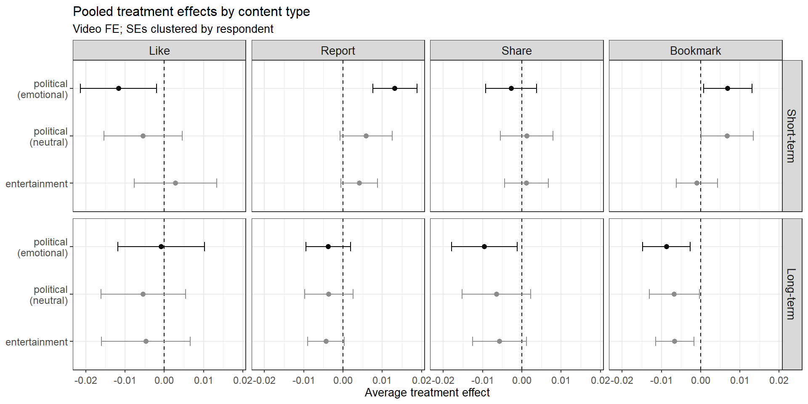
Pooled skip and watch-time ATEs, same specification as Figure 1.
estimates_fig2 <- bind_rows(
estimate_pooled_ates(datasets$wave_9, l_outcomegroups[["_other"]]) |>
mutate(horizon = "Short-term"),
estimate_pooled_ates(datasets$wave_10, l_outcomegroups[["_other"]]) |>
mutate(horizon = "Long-term")
)fig2 <- plot_pooled_horizon(
estimates_fig2,
l_outcomegroups[["_other"]],
title = "Skip and watch-time effects by content type",
subtitle = "Video FE; SEs clustered by respondent"
)
write_fig(
stem = "fig_2_skip_watch",
estimates = estimates_fig2,
plot = fig2,
width = 8,
height = 5,
publish = paper_pdf("fig_2_skip_watch")
)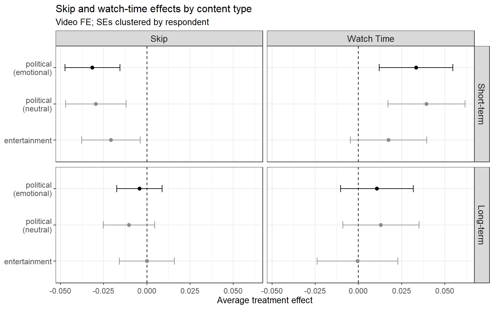
Emotionally manipulative political videos, wave 9. Lin (2013) treatment × demeaned party dummies on everyone, partisans, and non-partisans.
fig3_samples <- list("All" = NULL, "Partisan" = 1L, "Non-partisan" = 0L)
fig3_sample_order <- names(fig3_samples)
fig3_sample_dodge_levels <- rev(fig3_sample_order)
party_labels_az <- sort(names(party_codes))
party_row_levels <- c("All parties", party_labels_az)
df_fig3 <- datasets$wave_9 |>
filter(strategy_2 == strategies[1], !is.na(party), party %in% names(party_codes))
estimates_fig3 <- lapply(fig3_sample_order, function(samp) {
df_s <- df_fig3
if (!is.null(fig3_samples[[samp]])) {
df_s <- df_s |> filter(partisan == fig3_samples[[samp]])
}
lapply(l_outcomegroups$main, function(Y) {
fit_lin_party_feols(
df = df_s,
outcome_var = v_outcomes[[Y]],
party_levels = party_labels_az,
party_code_map = party_codes
) |>
mutate(outcome = Y, sample = samp)
}) |>
bind_rows()
}) |>
bind_rows() |>
mutate(
outcome = factor(outcome, levels = l_outcomegroups$main),
sample = factor(sample, levels = fig3_sample_dodge_levels),
party = factor(party, levels = party_row_levels)
)x_half_fig3 <- max(abs(estimates_fig3$estimate), na.rm = TRUE)
dodge_fig3 <- position_dodge(width = 0.55)
fig3 <- estimates_fig3 |>
ggplot(aes(x = estimate, y = party, color = sample)) +
geom_vline(xintercept = 0, linetype = "dashed") +
geom_errorbar(
aes(xmin = conf.low, xmax = conf.high),
width = 0.2,
position = dodge_fig3
) +
geom_point(size = 1.6, position = dodge_fig3) +
facet_grid(cols = vars(outcome)) +
scale_y_discrete(limits = rev(party_row_levels)) +
scale_color_discrete(
limits = fig3_sample_dodge_levels,
breaks = fig3_sample_order,
guide = guide_legend(reverse = TRUE)
) +
coord_cartesian(xlim = c(-x_half_fig3, x_half_fig3) * 0.92) +
labs(
x = "Average treatment effect",
y = NULL,
color = NULL,
title = "Emotional political videos: Lin effects by party and sample",
subtitle = "Bare coef = All-parties row; party rows = Lin party-specific TEs. Video FE; cluster ID."
) +
theme_bw(base_size = 10) +
theme(
legend.position = "bottom",
axis.text.x = element_text(angle = 0, vjust = 0.5, hjust = 0.5, size = 9),
axis.text.y = element_text(size = 9),
strip.text = element_text(size = 10)
)
write_fig(
stem = "fig_3_party_partisanship",
estimates = estimates_fig3,
plot = fig3,
width = 10,
height = 8,
publish = paper_pdf("fig_3_party_partisanship")
)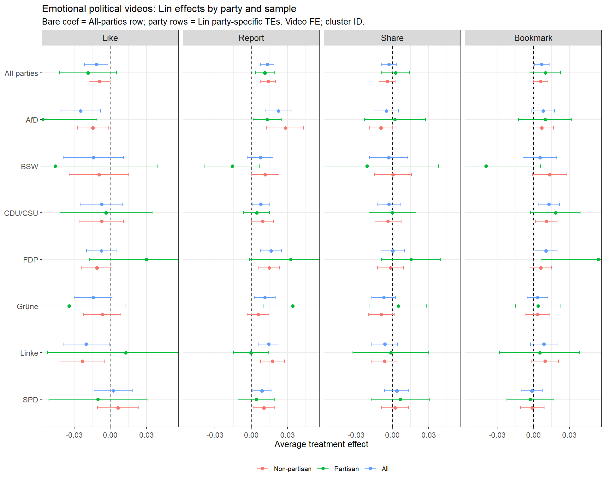
Analysis-generated SI exhibits in compiled SI order. Tables S1–S4, Table S15, and Figure S1 are not created here (descriptives, scraping, coding, screenshots, handwritten PAP table).
levels_vec <- c(
"0 = setup skepticism",
"1 = platform-focused",
"2 = content-focused",
"3 = other/unclear"
)
comments_counts <- comments_df |>
mutate(
scale_label = fct_explicit_na(scale_label, na_level = "NA"),
scale_label = fct_relevel(scale_label, levels_vec, after = 0)
) |>
count(scale_label, name = "n") |>
mutate(pct = n / sum(n))fig_s2 <- comments_counts |>
ggplot(aes(x = scale_label, y = pct)) +
geom_col(width = 0.7) +
geom_text(aes(label = percent(pct, accuracy = 0.1)), vjust = -0.25, size = 4) +
scale_y_continuous(labels = percent_format(accuracy = 1)) +
labs(x = NULL, y = "Share of comments", title = "Comment classification") +
theme_bw(base_size = 13) +
theme(panel.grid.major.x = element_blank())
write_fig(
stem = "fig_s2_platform_comments",
estimates = comments_counts,
plot = fig_s2,
width = 8,
height = 4,
publish = si_pdf("fig_s2_platform_comments")
)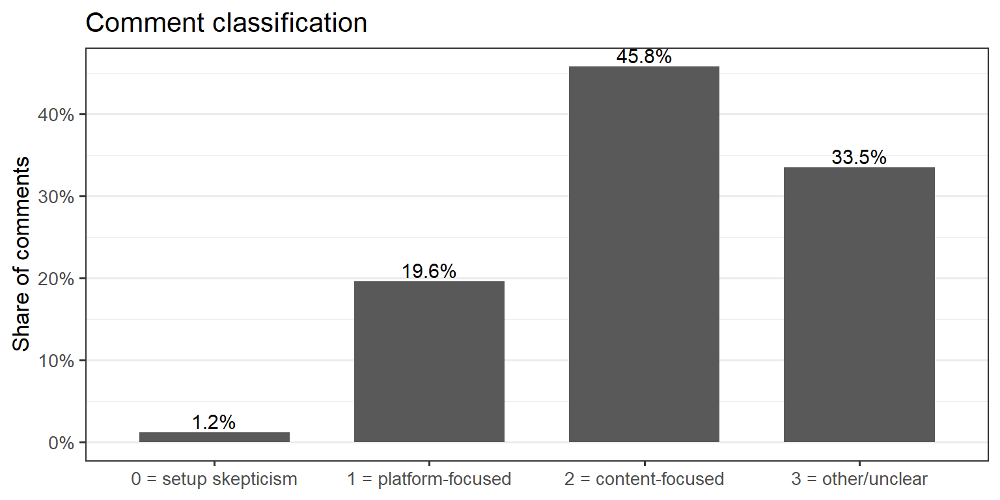
Short-term ATEs by emotional strategy (anger, fear, superiority).
df_s3 <- datasets$wave_9
estimates_s3 <- lapply(l_outcomegroups$main, function(Y) {
lapply(c("anger", "fear", "superiority"), function(S) {
run_feols_tidy(
df = df_s3 |> filter(strategy == S),
outcome_var = v_outcomes[[Y]],
extra_cols = list(outcome = Y, strategy = S)
)
}) |> bind_rows()
}) |>
bind_rows() |>
mutate(outcome = factor(outcome, levels = l_outcomegroups$main))fig_s3 <- estimates_s3 |>
gg_coefplot(aes(y = strategy, x = estimate, color = strategy)) +
facet_grid(cols = vars(outcome)) +
labs(title = "Short-term effects by emotional strategy")
write_fig(
stem = "fig_s3_by_strategy",
estimates = estimates_s3,
plot = fig_s3,
width = 7,
height = 3,
publish = si_pdf("fig_s3_by_strategy")
)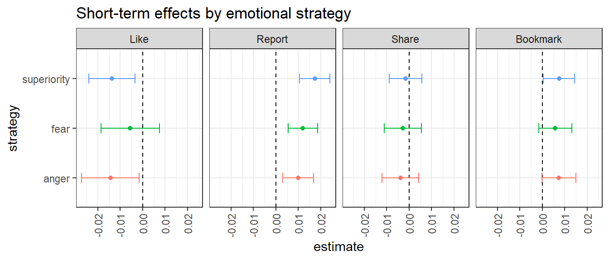
estimates_s4 <- lapply(l_outcomegroups[["_other"]], function(Y) {
lapply(c("anger", "fear", "superiority"), function(S) {
run_feols_tidy(
df = datasets$wave_9 |> filter(strategy == S),
outcome_var = v_outcomes[[Y]],
extra_cols = list(outcome = Y, strategy = S)
)
}) |> bind_rows()
}) |>
bind_rows() |>
mutate(outcome = factor(outcome, levels = l_outcomegroups[["_other"]]))fig_s4 <- estimates_s4 |>
gg_coefplot(aes(y = strategy, x = estimate, color = strategy)) +
facet_grid(cols = vars(outcome)) +
labs(title = "Skip and watch time by emotional strategy")
write_fig(
stem = "fig_s4_skip_watch_by_strategy",
estimates = estimates_s4,
plot = fig_s4,
width = 7,
height = 3,
publish = si_pdf("fig_s4_skip_watch_by_strategy")
)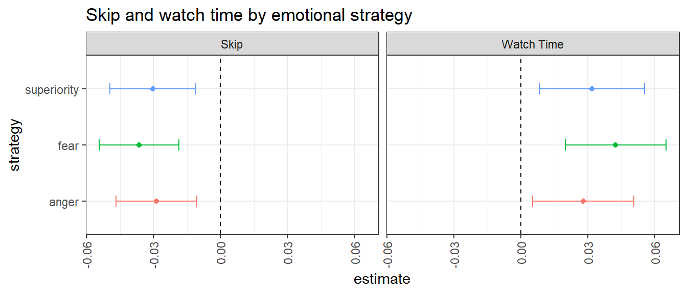
estimates_s5 <- lapply(l_outcomegroups[["_other"]], function(Y) {
lapply(strategies, function(S) {
lapply(names(l_partisanship), function(PS) {
run_feols_tidy(
df = datasets$wave_9 |>
filter(strategy_2 == S, partisan %in% l_partisanship[[PS]]),
outcome_var = v_outcomes[[Y]],
extra_cols = list(outcome = Y, strategy = S, partisan = PS)
)
}) |> bind_rows()
}) |> bind_rows()
}) |>
bind_rows() |>
mutate(outcome = factor(outcome, levels = l_outcomegroups[["_other"]]))fig_s5 <- estimates_s5 |>
gg_coefplot(aes(y = strategy, x = estimate, color = strategy)) +
facet_grid(cols = vars(outcome), rows = vars(partisan)) +
labs(title = "Skip and watch time by partisanship")
write_fig(
stem = "fig_s5_skip_watch_by_partisanship",
estimates = estimates_s5,
plot = fig_s5,
width = 7,
height = 6,
publish = si_pdf("fig_s5_skip_watch_by_partisanship")
)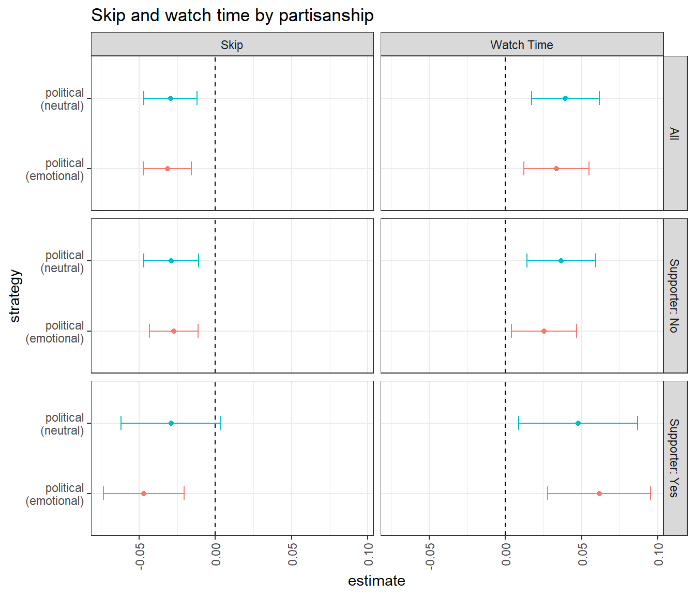
Short-term like and report: emotional vs neutral and emotional vs entertainment. Video FE; cluster ID. Columns: ALL and sending parties.
compare_outcomes <- c("Like", "Report")
compare_group_names <- c("ALL", names(party_codes))
fit_type_contrast <- function(df, outcome_name, type_var) {
y <- v_outcomes[[outcome_name]]
feols(
as.formula(paste0(y, " ~ workshop_Treatment * ", type_var, " | video")),
data = df,
cluster = ~ID
)
}
type_contrast_coef_map <- list(
"workshop_Treatment" = "Treatment (comparison type)",
"workshop_Treatment:emotional" = "Treatment × type"
)
df_pol <- datasets$wave_9 |>
filter(strategy_2 %in% strategies) |>
mutate(emotional = as.integer(strategy_2 == strategies[1]))
models_emo_neu <- lapply(compare_outcomes, function(Y) {
fits <- c(
list(ALL = fit_type_contrast(df_pol, Y, "emotional")),
lapply(names(party_codes), function(P) {
fit_type_contrast(df_pol |> filter(party == P), Y, "emotional")
}) |> setNames(names(party_codes))
)
fits[compare_group_names]
}) |>
setNames(compare_outcomes)
df_ee <- datasets$wave_9 |>
filter(strategy_2 %in% c(strategies[1], "entertainment")) |>
mutate(emotional = as.integer(strategy_2 == strategies[1]))
models_emo_ent <- lapply(compare_outcomes, function(Y) {
fits <- c(
list(ALL = fit_type_contrast(df_ee, Y, "emotional")),
lapply(names(party_codes), function(P) {
df_p <- df_ee |> filter(party == P | strategy_2 == "entertainment")
fit_type_contrast(df_p, Y, "emotional")
}) |> setNames(names(party_codes))
)
fits[compare_group_names]
}) |>
setNames(compare_outcomes)write_type_contrast <- function(models, dest_stem, caption, label) {
write_tab_rds(models, file.path(est_dir, paste0(dest_stem, ".rds")))
texreg::texreg(
models,
file = file.path(tab_dir, paste0(dest_stem, ".tex")),
digits = 3,
include.ci = FALSE,
custom.model.names = names(models),
custom.coef.map = type_contrast_coef_map,
caption = caption,
label = label,
stars = texreg_stars
)
publish_tex(dest_stem)
texreg::htmlreg(
models,
digits = 3,
include.ci = FALSE,
custom.model.names = names(models),
custom.coef.map = type_contrast_coef_map,
caption = caption,
stars = texreg_stars
)
}
write_type_contrast(
models_emo_neu$Like,
"tab_s5_emo_vs_neutral_like",
"Emotional vs politically neutral: Like (short-term). Video FE; SEs clustered by respondent.",
"tab:compare_emotional_vs_neutral_like"
)The table was written to the file 'tabs/tab_s5_emo_vs_neutral_like.tex'.| ALL | AfD | CDU/CSU | Linke | SPD | Grüne | FDP | BSW | |
|---|---|---|---|---|---|---|---|---|
| Treatment (comparison type) | -0.005 | -0.019* | -0.000 | -0.021* | 0.015 | 0.016 | -0.013 | -0.014 |
| (0.005) | (0.011) | (0.009) | (0.012) | (0.010) | (0.011) | (0.008) | (0.011) | |
| Treatment × type | -0.006 | -0.006 | -0.007 | 0.001 | -0.013 | -0.030*** | 0.006 | -0.000 |
| (0.005) | (0.011) | (0.011) | (0.013) | (0.012) | (0.011) | (0.009) | (0.015) | |
| Num. obs. | 72874 | 11968 | 11997 | 9694 | 11938 | 11257 | 10661 | 5359 |
| Num. groups: video | 219 | 36 | 36 | 29 | 36 | 34 | 32 | 16 |
| R2 (full model) | 0.021 | 0.012 | 0.026 | 0.017 | 0.024 | 0.016 | 0.010 | 0.021 |
| R2 (proj model) | 0.000 | 0.002 | 0.000 | 0.001 | 0.000 | 0.001 | 0.000 | 0.001 |
| Adj. R2 (full model) | 0.018 | 0.009 | 0.023 | 0.014 | 0.021 | 0.013 | 0.007 | 0.018 |
| Adj. R2 (proj model) | 0.000 | 0.001 | -0.000 | 0.001 | 0.000 | 0.000 | 0.000 | 0.000 |
| ***p < 0.01; **p < 0.05; *p < 0.1 | ||||||||
write_type_contrast(
models_emo_neu$Report,
"tab_s6_emo_vs_neutral_report",
"Emotional vs politically neutral: Report (short-term). Video FE; SEs clustered by respondent.",
"tab:compare_emotional_vs_neutral_report"
)The table was written to the file 'tabs/tab_s6_emo_vs_neutral_report.tex'.| ALL | AfD | CDU/CSU | Linke | SPD | Grüne | FDP | BSW | |
|---|---|---|---|---|---|---|---|---|
| Treatment (comparison type) | 0.006* | 0.002 | 0.010** | 0.000 | 0.003 | 0.013** | 0.011** | 0.001 |
| (0.003) | (0.008) | (0.005) | (0.005) | (0.006) | (0.006) | (0.005) | (0.005) | |
| Treatment × type | 0.007*** | 0.021** | -0.003 | 0.014** | 0.005 | -0.002 | 0.006 | 0.006 |
| (0.002) | (0.008) | (0.005) | (0.006) | (0.006) | (0.006) | (0.006) | (0.007) | |
| Num. obs. | 72874 | 11968 | 11997 | 9694 | 11938 | 11257 | 10661 | 5359 |
| Num. groups: video | 219 | 36 | 36 | 29 | 36 | 34 | 32 | 16 |
| R2 (full model) | 0.010 | 0.009 | 0.004 | 0.009 | 0.003 | 0.006 | 0.009 | 0.006 |
| R2 (proj model) | 0.002 | 0.002 | 0.001 | 0.002 | 0.001 | 0.002 | 0.003 | 0.000 |
| Adj. R2 (full model) | 0.007 | 0.005 | 0.001 | 0.006 | 0.000 | 0.003 | 0.006 | 0.003 |
| Adj. R2 (proj model) | 0.002 | 0.002 | 0.001 | 0.002 | 0.001 | 0.002 | 0.003 | 0.000 |
| ***p < 0.01; **p < 0.05; *p < 0.1 | ||||||||
write_type_contrast(
models_emo_ent$Like,
"tab_s7_emo_vs_ent_like",
"Emotional vs entertainment: Like (short-term). Video FE; SEs clustered by respondent.",
"tab:compare_emotional_vs_entertainment_like"
)The table was written to the file 'tabs/tab_s7_emo_vs_ent_like.tex'.| ALL | AfD | CDU/CSU | Linke | SPD | Grüne | FDP | BSW | |
|---|---|---|---|---|---|---|---|---|
| Treatment (comparison type) | 0.003 | 0.003 | 0.003 | 0.003 | 0.003 | 0.003 | 0.003 | 0.003 |
| (0.005) | (0.005) | (0.005) | (0.005) | (0.005) | (0.005) | (0.005) | (0.005) | |
| Treatment × type | -0.015*** | -0.027*** | -0.010 | -0.023** | -0.000 | -0.017** | -0.010 | -0.017 |
| (0.005) | (0.009) | (0.009) | (0.010) | (0.008) | (0.008) | (0.007) | (0.013) | |
| Num. obs. | 112070 | 69076 | 69050 | 66772 | 69063 | 68452 | 67758 | 62379 |
| Num. groups: video | 337 | 208 | 208 | 201 | 208 | 206 | 204 | 188 |
| R2 (full model) | 0.038 | 0.047 | 0.048 | 0.049 | 0.048 | 0.048 | 0.051 | 0.051 |
| R2 (proj model) | 0.000 | 0.000 | 0.000 | 0.000 | 0.000 | 0.000 | 0.000 | 0.000 |
| Adj. R2 (full model) | 0.035 | 0.044 | 0.045 | 0.046 | 0.045 | 0.045 | 0.048 | 0.049 |
| Adj. R2 (proj model) | 0.000 | 0.000 | 0.000 | 0.000 | -0.000 | 0.000 | 0.000 | 0.000 |
| ***p < 0.01; **p < 0.05; *p < 0.1 | ||||||||
write_type_contrast(
models_emo_ent$Report,
"tab_s8_emo_vs_ent_report",
"Emotional vs entertainment: Report (short-term). Video FE; SEs clustered by respondent.",
"tab:compare_emotional_vs_entertainment_report"
)The table was written to the file 'tabs/tab_s8_emo_vs_ent_report.tex'.| ALL | AfD | CDU/CSU | Linke | SPD | Grüne | FDP | BSW | |
|---|---|---|---|---|---|---|---|---|
| Treatment (comparison type) | 0.004* | 0.004* | 0.004* | 0.004* | 0.004* | 0.004* | 0.004* | 0.004* |
| (0.002) | (0.002) | (0.002) | (0.002) | (0.002) | (0.002) | (0.002) | (0.002) | |
| Treatment × type | 0.009*** | 0.018*** | 0.004 | 0.010** | 0.005 | 0.007* | 0.012*** | 0.003 |
| (0.002) | (0.005) | (0.003) | (0.004) | (0.004) | (0.004) | (0.004) | (0.005) | |
| Num. obs. | 112070 | 69076 | 69050 | 66772 | 69063 | 68452 | 67758 | 62379 |
| Num. groups: video | 337 | 208 | 208 | 201 | 208 | 206 | 204 | 188 |
| R2 (full model) | 0.010 | 0.013 | 0.004 | 0.006 | 0.005 | 0.005 | 0.005 | 0.004 |
| R2 (proj model) | 0.001 | 0.001 | 0.000 | 0.001 | 0.000 | 0.001 | 0.001 | 0.000 |
| Adj. R2 (full model) | 0.007 | 0.010 | 0.001 | 0.003 | 0.002 | 0.002 | 0.002 | 0.001 |
| Adj. R2 (proj model) | 0.001 | 0.001 | 0.000 | 0.001 | 0.000 | 0.001 | 0.001 | 0.000 |
| ***p < 0.01; **p < 0.05; *p < 0.1 | ||||||||
covs <- names(labels_en)
names(covs) <- labels_en
stopifnot(n_distinct(df_w9_w10$id_w9) == nrow(df_w9_w10))
results_main <- lapply(covs, function(v) {
as.formula(paste0("attrit ~ ", v)) |>
lm_robust(data = df_w9_w10 |> mutate(across(all_of(v), scale))) |>
tidy(conf.int = TRUE) |>
filter(term == v)
}) |>
bind_rows(.id = "label")fig_s6 <- results_main |>
ggplot(aes(x = estimate, y = forcats::fct_reorder(label, estimate))) +
geom_vline(xintercept = 0, linetype = "dashed") +
geom_errorbarh(aes(xmin = conf.low, xmax = conf.high), height = 0) +
geom_point() +
labs(
title = "Covariate main effects on attrition (LPM)",
x = "Covariate estimate (Δ probability of attrition)",
y = NULL
) +
theme_bw()Warning: `geom_errorbarh()` was deprecated in ggplot2 4.0.0.
ℹ Please use the `orientation` argument of `geom_errorbar()` instead.write_fig(
stem = "fig_s6_attrition_covariates",
estimates = results_main,
plot = fig_s6,
width = 7,
height = 12,
publish = si_pdf("fig_s6_attrition_covariates")
)`height` was translated to `width`.
`height` was translated to `width`.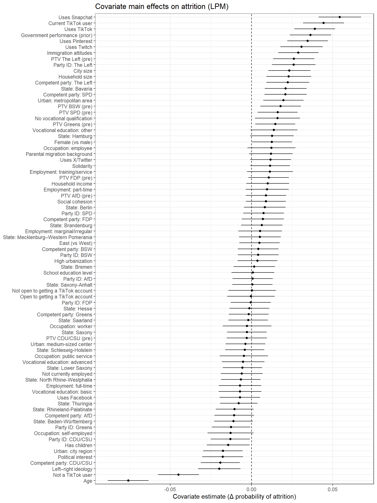
attrit_counts <- df_w9_w10 |>
mutate(arm = ifelse(workshop == 1, "Treatment", "Control")) |>
count(arm, attrit) |>
tidyr::complete(arm, attrit = c(0, 1), fill = list(n = 0))
attrit_summary <- attrit_counts |>
group_by(arm) |>
summarise(
original_n = sum(n),
retained = sum(n[attrit == 0]),
attrited = sum(n[attrit == 1]),
.groups = "drop"
) |>
mutate(rate = 100 * attrited / original_n)
attrit_test <- df_w9_w10 |>
mutate(treat = as.integer(workshop == 1)) |>
lm_robust(attrit ~ treat, data = _)
attrit_test_td <- tidy(attrit_test, conf.int = TRUE) |> filter(term == "treat")overall <- attrit_summary |>
summarise(
arm = "Overall",
original_n = sum(original_n),
retained = sum(retained),
attrited = sum(attrited)
) |>
mutate(rate = 100 * attrited / original_n)
attrit_rows <- bind_rows(
attrit_summary |> arrange(arm != "Control", arm),
overall
)
d <- attrit_test_td$estimate
p_attrit <- attrit_test_td$p.value
ci <- c(attrit_test_td$conf.low, attrit_test_td$conf.high)
fmt_row <- function(r) {
sprintf(
"%s & %s & %s & %s & %.2f \\\\",
r$arm, r$original_n, r$retained, r$attrited, r$rate
)
}
tex <- c(
"\\begin{table}",
"\\caption{\\label{tab:attrition-summary}Attrition by treatment condition.}",
"\\centering",
"\\begin{threeparttable}",
"\\begin{tabular}[t]{lrrrr}",
"\\toprule",
"Condition & Original $N$ & Retained & Attrited & Attrition rate (\\%)\\\\",
"\\midrule",
vapply(seq_len(nrow(attrit_rows)), function(i) fmt_row(attrit_rows[i, ]), character(1)),
"\\bottomrule",
"\\end{tabular}",
"\\begin{tablenotes}",
sprintf(
"\\item Note: The treatment--control difference is %.2f percentage points (95\\%% CI: %.2f to %.2f; $p=%.3f$).",
100 * d, 100 * ci[1], 100 * ci[2], p_attrit
),
"\\end{tablenotes}",
"\\end{threeparttable}",
"\\end{table}"
)
writeLines(tex, file.path(tab_dir, "tab_s9_attrition.tex"))
publish_tex("tab_s9_attrition")
knitr::kable(
attrit_rows,
digits = 2,
caption = "Attrition by treatment condition"
)| arm | original_n | retained | attrited | rate |
|---|---|---|---|---|
| Control | 2481 | 1824 | 657 | 26.48 |
| Treatment | 2464 | 1810 | 654 | 26.54 |
| Overall | 4945 | 3634 | 1311 | 26.51 |
results_int <- lapply(covs, function(v) {
as.formula(paste0("attrit ~ workshop * ", v)) |>
lm_robust(data = df_w9_w10 |> mutate(across(all_of(v), scale))) |>
tidy(conf.int = TRUE) |>
filter(grepl(":", term))
}) |>
bind_rows(.id = "label")fig_s7 <- results_int |>
ggplot(aes(x = estimate, y = forcats::fct_reorder(label, estimate))) +
geom_vline(xintercept = 0, linetype = "dashed") +
geom_errorbarh(aes(xmin = conf.low, xmax = conf.high), height = 0) +
geom_point() +
labs(
title = "Treatment × covariate interactions on attrition (LPM)",
x = "Interaction estimate (Δ probability of attrition)",
y = NULL
) +
theme_bw()
write_fig(
stem = "fig_s7_attrition_interaction",
estimates = results_int,
plot = fig_s7,
width = 7,
height = 12,
publish = si_pdf("fig_s7_attrition_interaction")
)`height` was translated to `width`.
`height` was translated to `width`.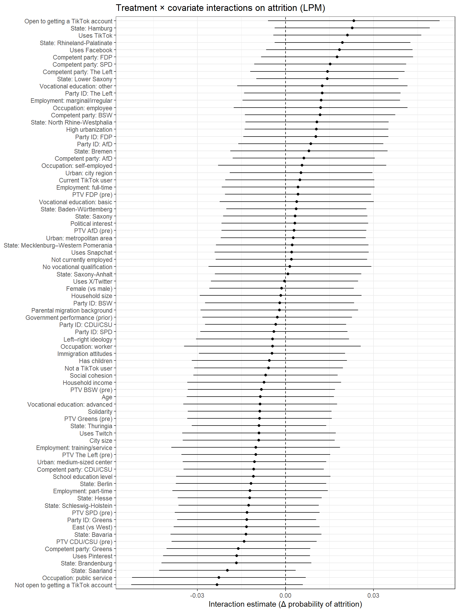
Figure 1 short-term companion, restricted to respondents retained in wave 10.
nonattrit_ids <- df_w9_w10 |>
filter(attrit == 0) |>
pull(id_w9) |>
as.character()
df_w9_nonattrit <- datasets$wave_9 |>
filter(as.character(ID) %in% nonattrit_ids)
estimates_s8 <- estimate_pooled_ates(df_w9_nonattrit, l_outcomegroups$main) |>
mutate(horizon = "Short-term")fig_s8 <- plot_pooled_horizon(
estimates_s8,
l_outcomegroups$main,
title = "Pooled short-term treatment effects (non-attriters)",
subtitle = "Video FE; SEs clustered by respondent; retained respondents only"
)
write_fig(
stem = "fig_s8_fig1_nonattriters",
estimates = estimates_s8,
plot = fig_s8,
width = 10,
height = 3.5,
publish = si_pdf("fig_s8_fig1_nonattriters")
)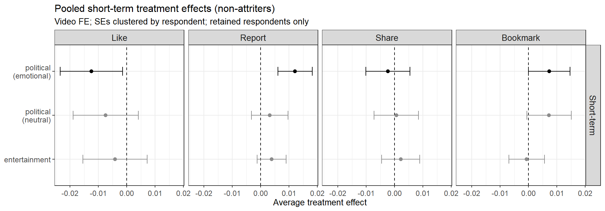
Long-term ATEs after dropping respondent–video pairs already shown in both waves (shown_both_waves == 0; flag merged in 1_data_prep.qmd).
df_w10_norepeat <- df_w10_no_repeated_videos
cat(
"Wave 10 rows: ", nrow(datasets$wave_10),
"; after dropping repeats (shown_both_waves == 0): ", nrow(df_w10_norepeat),
"; dropped: ", nrow(datasets$wave_10) - nrow(df_w10_norepeat), "\n",
sep = ""
)Wave 10 rows: 121880; after dropping repeats (shown_both_waves == 0): 107250; dropped: 14630estimates_s9 <- bind_rows(
estimate_pooled_ates(df_w10_norepeat, l_outcomegroups$main),
estimate_pooled_ates(df_w10_norepeat, l_outcomegroups[["_other"]])
) |>
mutate(horizon = "Long-term")fig_s9 <- estimates_s9 |>
mutate(
strategy = factor(as.character(strategy), levels = rev(strategy_order_article)),
outcome = factor(
outcome,
levels = c(l_outcomegroups$main, l_outcomegroups[["_other"]])
),
strat_color = as.character(strategy)
) |>
ggplot(aes(x = estimate, y = strategy, color = strat_color)) +
geom_vline(xintercept = 0, linetype = "dashed") +
geom_errorbar(aes(xmin = conf.low, xmax = conf.high), width = 0.2) +
geom_point(size = 1.8) +
facet_grid(cols = vars(outcome), scales = "free_x") +
scale_color_manual(values = strategy_color_values, guide = "none") +
labs(
x = "Average treatment effect",
y = NULL,
title = "Long-term effects excluding repeated video exposure",
subtitle = "Video FE; SEs clustered by respondent"
) +
theme_bw(base_size = 10) +
theme(
axis.text.x = element_text(angle = 0, vjust = 0.5, hjust = 0.5, size = 8),
strip.text = element_text(size = 9)
)
write_fig(
stem = "fig_s9_longterm_no_repeat",
estimates = estimates_s9,
plot = fig_s9,
width = 12,
height = 3.5,
publish = si_pdf("fig_s9_longterm_no_repeat")
)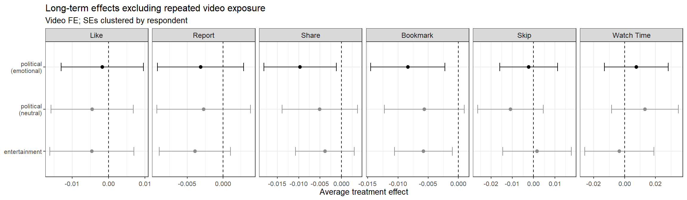
afd_3way_outcomes <- c("Like", "Share", "Bookmark", "Report")
afd_3way_coef_map <- list(
"treatment_demeaned" = "Treatment (demeaned)",
"AFD_supporter_demeaned" = "AfD supporter (demeaned)",
"treatment_demeaned:AFD_supporter_demeaned" = "Treatment × AfD supporter (demeaned)",
"treatment_demeaned:AFD_videos_demeaned" = "Treatment × AfD video (demeaned)",
"AFD_supporter_demeaned:AFD_videos_demeaned" = "AfD supporter × AfD video (demeaned)",
"treatment_demeaned:AFD_supporter_demeaned:AFD_videos_demeaned" =
"Treatment × AfD supporter × AfD video (demeaned)"
)
prep_afd_3way <- function(df) {
df |>
filter(strategy_2 == strategies[1]) |>
mutate(
AFD_supporter = as.integer(party_preference_afd == 1),
AFD_videos = as.integer(party == "AfD")
) |>
mutate(
treatment_demeaned = workshop_Treatment - mean(workshop_Treatment, na.rm = TRUE),
AFD_supporter_demeaned = AFD_supporter - mean(AFD_supporter, na.rm = TRUE),
AFD_videos_demeaned = AFD_videos - mean(AFD_videos, na.rm = TRUE)
)
}
fit_afd_3way <- function(df, outcome_name) {
feols(
as.formula(paste0(
v_outcomes[[outcome_name]],
" ~ treatment_demeaned * AFD_supporter_demeaned * AFD_videos_demeaned | video"
)),
data = df,
cluster = ~ID
)
}
df_afd_3way <- prep_afd_3way(datasets$wave_9)
df_afd_3way_lt <- prep_afd_3way(datasets$wave_10)
models_afd_3way <- lapply(afd_3way_outcomes, function(Y) fit_afd_3way(df_afd_3way, Y)) |>
setNames(afd_3way_outcomes)
models_afd_3way_lt <- lapply(afd_3way_outcomes, function(Y) fit_afd_3way(df_afd_3way_lt, Y)) |>
setNames(afd_3way_outcomes)write_afd_3way <- function(models, dest_stem, caption, label) {
write_tab_rds(models, file.path(est_dir, paste0(dest_stem, ".rds")))
texreg::texreg(
models,
file = file.path(tab_dir, paste0(dest_stem, ".tex")),
digits = 3,
include.ci = FALSE,
custom.model.names = afd_3way_outcomes,
custom.coef.map = afd_3way_coef_map,
caption = caption,
label = label,
stars = texreg_stars
)
publish_tex(dest_stem)
texreg::htmlreg(
models,
digits = 3,
include.ci = FALSE,
custom.model.names = afd_3way_outcomes,
custom.coef.map = afd_3way_coef_map,
caption = caption,
stars = texreg_stars
)
}
write_afd_3way(
models_afd_3way,
"tab_s10_afd_3way_short",
"Treatment × AfD supporter × AfD video (all demeaned): Like/Share/Bookmark/Report (emotional political videos, short-term). Video FE; SEs clustered by respondent.",
"tab:afd_video_3way_demeaned"
)The table was written to the file 'tabs/tab_s10_afd_3way_short.tex'.| Like | Share | Bookmark | Report | |
|---|---|---|---|---|
| Treatment (demeaned) | -0.012** | -0.003 | 0.007** | 0.013*** |
| (0.005) | (0.003) | (0.003) | (0.003) | |
| AfD supporter (demeaned) | 0.005 | 0.008** | 0.003 | -0.003 |
| (0.006) | (0.004) | (0.003) | (0.003) | |
| Treatment × AfD supporter (demeaned) | -0.007 | 0.000 | 0.001 | -0.015*** |
| (0.011) | (0.008) | (0.007) | (0.006) | |
| Treatment × AfD video (demeaned) | -0.020** | -0.004 | 0.001 | 0.012** |
| (0.008) | (0.005) | (0.004) | (0.005) | |
| AfD supporter × AfD video (demeaned) | 0.195*** | 0.044*** | 0.027*** | -0.044*** |
| (0.011) | (0.006) | (0.005) | (0.005) | |
| Treatment × AfD supporter × AfD video (demeaned) | -0.044** | 0.014 | 0.002 | 0.000 |
| (0.022) | (0.013) | (0.011) | (0.009) | |
| Num. obs. | 51990 | 51990 | 51990 | 51990 |
| Num. groups: video | 156 | 156 | 156 | 156 |
| R2 (full model) | 0.034 | 0.007 | 0.005 | 0.014 |
| R2 (proj model) | 0.014 | 0.002 | 0.001 | 0.005 |
| Adj. R2 (full model) | 0.031 | 0.004 | 0.002 | 0.011 |
| Adj. R2 (proj model) | 0.014 | 0.002 | 0.001 | 0.005 |
| ***p < 0.01; **p < 0.05; *p < 0.1 | ||||
write_afd_3way(
models_afd_3way_lt,
"tab_s11_afd_3way_long",
"Treatment × AfD supporter × AfD video (all demeaned): Like/Share/Bookmark/Report (emotional political videos, long-term / wave 10). Video FE; SEs clustered by respondent.",
"tab:afd_video_3way_demeaned_longterm"
)The table was written to the file 'tabs/tab_s11_afd_3way_long.tex'.| Like | Share | Bookmark | Report | |
|---|---|---|---|---|
| Treatment (demeaned) | -0.001 | -0.009** | -0.009*** | -0.004 |
| (0.006) | (0.004) | (0.003) | (0.003) | |
| AfD supporter (demeaned) | 0.005 | 0.017*** | 0.007* | 0.005 |
| (0.006) | (0.005) | (0.004) | (0.004) | |
| Treatment × AfD supporter (demeaned) | -0.004 | -0.004 | -0.014* | -0.015* |
| (0.013) | (0.010) | (0.008) | (0.008) | |
| Treatment × AfD video (demeaned) | -0.002 | -0.005 | -0.002 | 0.000 |
| (0.009) | (0.005) | (0.004) | (0.005) | |
| AfD supporter × AfD video (demeaned) | 0.192*** | 0.046*** | 0.027*** | -0.036*** |
| (0.012) | (0.007) | (0.006) | (0.004) | |
| Treatment × AfD supporter × AfD video (demeaned) | -0.001 | 0.001 | -0.006 | -0.003 |
| (0.024) | (0.014) | (0.011) | (0.009) | |
| Num. obs. | 47728 | 47728 | 47728 | 47728 |
| Num. groups: video | 156 | 156 | 156 | 156 |
| R2 (full model) | 0.032 | 0.008 | 0.007 | 0.009 |
| R2 (proj model) | 0.013 | 0.004 | 0.003 | 0.003 |
| Adj. R2 (full model) | 0.029 | 0.005 | 0.004 | 0.006 |
| Adj. R2 (proj model) | 0.013 | 0.004 | 0.002 | 0.003 |
| ***p < 0.01; **p < 0.05; *p < 0.1 | ||||
df_w9_w10 <- df_w9_w10 |>
mutate(
party_id_w9_afd_demeaned = party_id_w9_afd - mean(party_id_w9_afd, na.rm = TRUE)
)
models_s12 <- list(
identification = lm_robust(
party_id_w10_afd ~ workshop * party_id_w9_afd_demeaned,
data = df_w9_w10
),
conditional_afd = lm_robust(
party_id_w10_afd ~ workshop,
data = df_w9_w10 |> filter(party_id_w9_afd == 1)
),
conditional_non_afd = lm_robust(
party_id_w10_afd ~ workshop,
data = df_w9_w10 |> filter(party_id_w9_afd == 0)
)
)texreg::texreg(
models_s12,
file = file.path(tab_dir, "tab_s12_afd_identification.tex"),
digits = 3,
include.ci = FALSE,
custom.model.names = c("All respondents", "AfD identifiers", "Non-AfD respondents"),
custom.coef.map = list(
"(Intercept)" = "Intercept",
"workshop" = "Treatment (workshop)",
"party_id_w9_afd_demeaned" = "AfD ID (wave 9, demeaned)",
"workshop:party_id_w9_afd_demeaned" = "Treatment × AfD ID (demeaned)"
),
caption = "Effect of digital literacy workshop on AfD identification (wave 10).",
label = "tab:afd_maintained_support",
stars = texreg_stars
)The table was written to the file 'tabs/tab_s12_afd_identification.tex'.publish_tex("tab_s12_afd_identification")
texreg::htmlreg(
models_s12,
digits = 3,
include.ci = FALSE,
custom.model.names = c("All respondents", "AfD identifiers", "Non-AfD respondents"),
stars = texreg_stars
)| All respondents | AfD identifiers | Non-AfD respondents | |
|---|---|---|---|
| (Intercept) | 0.187*** | 0.911*** | 0.043*** |
| (0.005) | (0.016) | (0.005) | |
| workshop | -0.018** | -0.059** | -0.010 |
| (0.007) | (0.026) | (0.007) | |
| party_id_w9_afd_demeaned | 0.868*** | ||
| (0.017) | |||
| workshop:party_id_w9_afd_demeaned | -0.049* | ||
| (0.027) | |||
| R2 | 0.672 | 0.008 | 0.001 |
| Adj. R2 | 0.672 | 0.007 | 0.000 |
| Num. obs. | 3634 | 602 | 3032 |
| RMSE | 0.219 | 0.322 | 0.193 |
| ***p < 0.01; **p < 0.05; *p < 0.1 | |||
maintained_results <- party_codes |>
lapply(function(party) {
w9 <- paste0("party_id_w9_", party)
w10 <- paste0("party_id_w10_", party)
df_tmp <- df_w9_w10 |>
mutate(
id_w9 = .data[[w9]],
id_w9_demeaned = id_w9 - mean(id_w9, na.rm = TRUE),
id_w10 = .data[[w10]]
)
m_all <- lm_robust(id_w10 ~ workshop * id_w9_demeaned, data = df_tmp)
m_id <- lm_robust(id_w10 ~ workshop, data = df_tmp |> filter(id_w9 == 1))
m_non <- lm_robust(id_w10 ~ workshop, data = df_tmp |> filter(id_w9 == 0))
bind_rows(
tidy(m_all) |> filter(term == "workshop") |> mutate(group = "All respondents"),
tidy(m_id) |> filter(term == "workshop") |> mutate(group = "Identifiers"),
tidy(m_non) |> filter(term == "workshop") |> mutate(group = "Non-identifiers")
) |>
mutate(party = party_names[[party]])
}) |>
bind_rows()
party_order_maintained <- maintained_results |>
filter(group == "All respondents") |>
arrange(estimate) |>
pull(party)
maintained_results <- maintained_results |>
mutate(
party = factor(party, levels = party_order_maintained),
group = factor(group, levels = c("All respondents", "Identifiers", "Non-identifiers"))
)fig_s10 <- maintained_results |>
ggplot(aes(x = estimate, y = party, color = group)) +
geom_vline(xintercept = 0, linetype = "dashed", alpha = 0.5) +
geom_point(position = position_dodge(width = 0.6), size = 2.5) +
geom_errorbarh(
aes(xmin = conf.low, xmax = conf.high),
position = position_dodge(width = 0.6),
height = 0.2
) +
geom_text(
aes(label = sprintf("%.3f (p = %.3f)", estimate, p.value), group = group),
position = position_dodge(width = 0.6),
hjust = 0.5, vjust = -0.7, size = 2.5, show.legend = FALSE
) +
labs(
x = "Effect of workshop on party identification (wave 10)",
y = "Party",
color = NULL,
title = "Effects of digital literacy workshop on party identification"
) +
theme_bw()
write_fig(
stem = "fig_s10_pid_by_prior",
estimates = maintained_results,
plot = fig_s10,
width = 7,
height = 9,
publish = si_pdf("fig_s10_pid_by_prior")
)`height` was translated to `width`.
`height` was translated to `width`.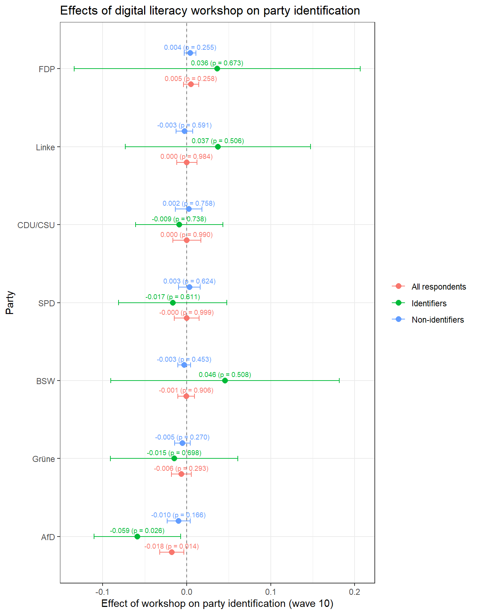
pid_overall <- build_pid_lodes(df_w9_w10)fig_s11 <- plot_pid_alluvial(
pid_overall$lodes, pid_overall$party_cols,
"Party identification transitions: Wave 9 \u2192 Wave 10"
)
write_fig(
stem = "fig_s11_pid_transitions",
estimates = pid_overall,
plot = fig_s11,
publish = si_pdf("fig_s11_pid_transitions")
)Saving 7 x 5 in imageWarning in setup_data(...): Some differentiation aesthetics vary within alluvia, and will be diffused by their first value.
Consider using `geom_flow()` instead.
Warning in setup_data(...): Some differentiation aesthetics vary within alluvia, and will be diffused by their first value.
Consider using `geom_flow()` instead.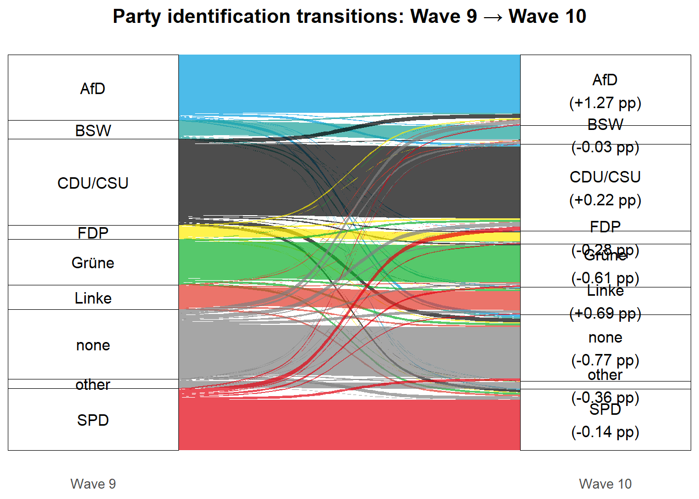
pid_treat <- build_pid_lodes(df_w9_w10 |> filter(workshop == 1))fig_s12 <- plot_pid_alluvial(
pid_treat$lodes, pid_treat$party_cols,
"Party identification transitions (treatment)"
)
write_fig(
stem = "fig_s12_pid_transitions_treat",
estimates = pid_treat,
plot = fig_s12,
publish = si_pdf("fig_s12_pid_transitions_treat")
)Saving 7 x 5 in imageWarning in setup_data(...): Some differentiation aesthetics vary within alluvia, and will be diffused by their first value.
Consider using `geom_flow()` instead.
Warning in setup_data(...): Some differentiation aesthetics vary within alluvia, and will be diffused by their first value.
Consider using `geom_flow()` instead.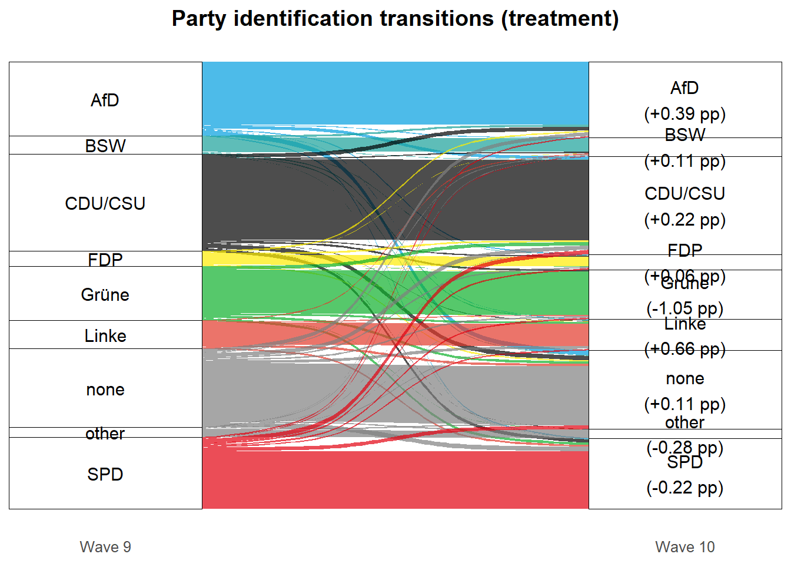
pid_control <- build_pid_lodes(df_w9_w10 |> filter(workshop == 0))fig_s13 <- plot_pid_alluvial(
pid_control$lodes, pid_control$party_cols,
"Party identification transitions (control)"
)
write_fig(
stem = "fig_s13_pid_transitions_control",
estimates = pid_control,
plot = fig_s13,
publish = si_pdf("fig_s13_pid_transitions_control")
)Saving 7 x 5 in imageWarning in setup_data(...): Some differentiation aesthetics vary within alluvia, and will be diffused by their first value.
Consider using `geom_flow()` instead.
Warning in setup_data(...): Some differentiation aesthetics vary within alluvia, and will be diffused by their first value.
Consider using `geom_flow()` instead.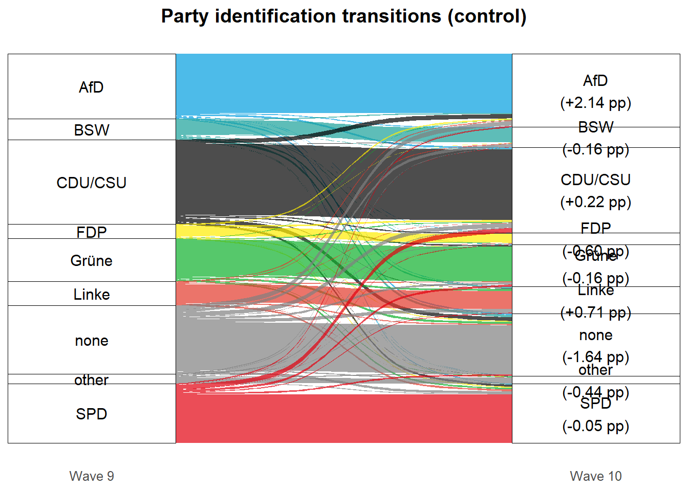
ptv_short <- estimate_ptv_by_id("ptv_w9_post_")
ptv_long <- estimate_ptv_by_id("ptv_w10_")
group_levels <- c("All respondents", "Identifiers", "Non-identifiers")
party_order_ptv <- ptv_short |>
filter(group == "All respondents") |>
arrange(estimate) |>
pull(party) |>
as.character()
estimates_ptv <- bind_rows(
ptv_short |> mutate(horizon = "Short-term (wave 9)"),
ptv_long |> mutate(horizon = "Long-term (wave 10)")
) |>
mutate(
horizon = factor(horizon, levels = c("Short-term (wave 9)", "Long-term (wave 10)")),
party = factor(as.character(party), levels = party_order_ptv),
group = factor(as.character(group), levels = group_levels)
)dodge_ptv <- position_dodge(width = 0.6)
fig_s14 <- estimates_ptv |>
ggplot(aes(x = estimate, y = party, color = group)) +
geom_vline(xintercept = 0, linetype = "dashed", alpha = 0.5) +
geom_point(position = dodge_ptv, size = 2.5) +
geom_errorbarh(
aes(xmin = conf.low, xmax = conf.high),
position = dodge_ptv,
height = 0.2
) +
geom_text(
aes(label = sprintf("%.3f (p = %.3f)", estimate, p.value), group = group),
position = dodge_ptv, hjust = 0.5, vjust = -0.7, size = 2.2, show.legend = FALSE
) +
facet_grid(cols = vars(horizon)) +
labs(
x = "Effect of workshop on PTV (0–1 scale)",
y = "Party",
color = NULL,
title = "PTV effects of digital literacy workshop"
) +
theme_bw(base_size = 11) +
theme(
legend.position = "bottom",
strip.background = element_rect(fill = "grey95", color = "grey80")
)
write_fig(
stem = "fig_s14_ptv",
estimates = estimates_ptv,
plot = fig_s14,
width = 10,
height = 8,
publish = si_pdf("fig_s14_ptv")
)`height` was translated to `width`.
`height` was translated to `width`.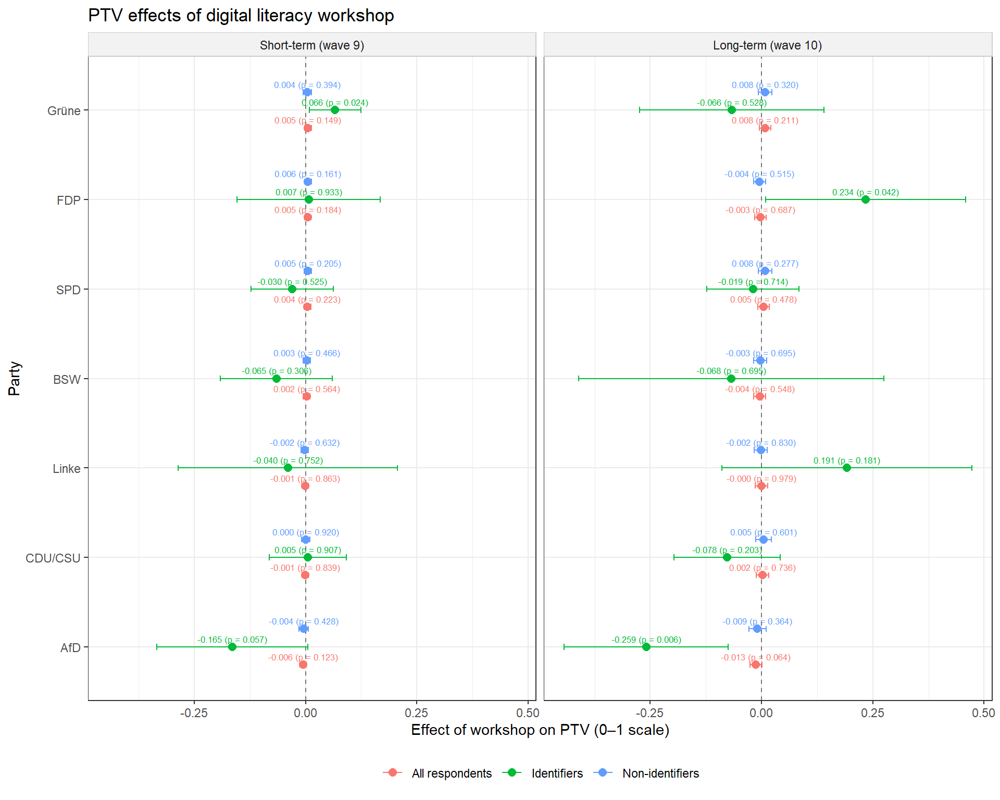
cor_long <- bind_rows(
build_cor_df(datasets$wave_9, "Short-term"),
build_cor_df(datasets$wave_10, "Long-term")
) |>
mutate(sign = ifelse(r >= 0, "positive", "negative"))
var_levels <- names(v_outcomes)
cor_long <- cor_long |>
mutate(
x_idx = match(var2, var_levels),
y_idx = match(var1, var_levels)
)
scale_in_cell <- 0.42
ellipse_upper <- cor_long |>
filter(y_idx < x_idx) |>
group_by(wave, treat, var1, var2, r, x_idx, y_idx, sign) |>
do({
rr <- .$r[1]
S <- matrix(c(1, rr, rr, 1), nrow = 2)
e <- as.data.frame(ellipse::ellipse(S, centre = c(0, 0), level = 0.68, npoints = 80))
maxabs <- max(max(abs(e$x)), max(abs(e$y)), 1e-9)
e$x <- (e$x / maxabs) * scale_in_cell + .$x_idx[1]
e$y <- (e$y / maxabs) * scale_in_cell + .$y_idx[1]
e$wave <- .$wave[1]
e$treat <- .$treat[1]
e$var1 <- .$var1[1]
e$var2 <- .$var2[1]
e$sign <- .$sign[1]
e$r <- rr
e
}) |>
ungroup()
label_lower <- cor_long |>
filter(y_idx > x_idx) |>
mutate(label = sprintf("%.2f", r))fig_s15 <- ggplot() +
geom_polygon(
data = ellipse_upper,
aes(x = x, y = y, group = interaction(wave, treat, var1, var2), fill = sign),
color = NA, alpha = 0.75
) +
geom_text(
data = label_lower,
aes(x = x_idx, y = y_idx, label = label, color = sign),
size = 3
) +
scale_fill_manual(values = c(positive = "#d73027", negative = "#4575b4"), name = "Sign") +
scale_color_manual(values = c(positive = "#d73027", negative = "#4575b4"), guide = "none") +
scale_x_continuous(breaks = seq_along(var_levels), labels = var_levels, expand = expansion(mult = 0.05)) +
scale_y_continuous(breaks = seq_along(var_levels), labels = var_levels, expand = expansion(mult = 0.05)) +
coord_fixed() +
labs(x = NULL, y = NULL) +
theme_tiktok() +
theme(
panel.grid = element_blank(),
axis.text.x = element_text(angle = 90, vjust = 0.5, hjust = 1)
) +
facet_grid(rows = vars(treat), cols = vars(wave))
write_fig(
stem = "fig_s15_outcome_ellipses",
estimates = cor_long,
plot = fig_s15,
width = 9,
height = 7,
publish = si_pdf("fig_s15_outcome_ellipses")
)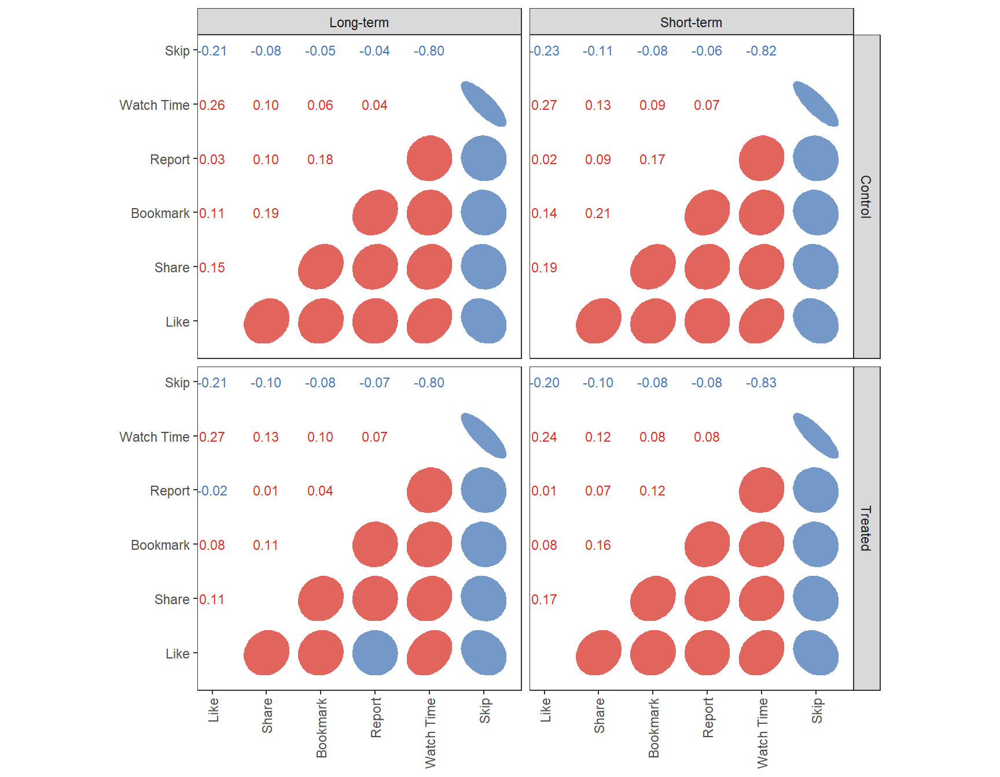
df_h1_emo <- datasets$wave_9 |>
filter(strategy_2 == strategies[1]) |>
mutate(
engage = rowMeans(cbind(videoSharep1r, videoLikep1r, videoBookmarkp1r), na.rm = FALSE)
)
h1_outcomes <- c(
Like = v_outcomes[["Like"]],
Share = v_outcomes[["Share"]],
Bookmark = v_outcomes[["Bookmark"]],
Engage = "engage"
)
models_h1 <- lapply(h1_outcomes, function(y) {
feols(as.formula(paste0(y, " ~ workshop_Treatment | video")), data = df_h1_emo, cluster = ~ID)
})
h1_comp <- c("Like", "Share", "Bookmark")
p_h1_raw <- sapply(models_h1[h1_comp], \(m) coeftable(m)["workshop_Treatment", "Pr(>|t|)"])
p_h1_bh <- p.adjust(p_h1_raw, method = "BH")
h1_bh_row <- c(sprintf("%.3f", p_h1_bh[h1_comp]), "---")
names(h1_bh_row) <- names(models_h1)h1_caption <- paste(
"PAP H1a reconciliation: Like, Share, Bookmark, and engage = mean(share, like, bookmark)",
"on emotional political videos (short-term). Video FE; SEs clustered by respondent.",
"Row p (BH FDR): Benjamini--Hochberg FDR correction across the three component tests",
"(Like, Share, Bookmark); Engage is not in that family."
)
texreg::texreg(
models_h1,
file = file.path(tab_dir, "tab_s13_pap_h1a.tex"),
digits = 3,
include.ci = FALSE,
custom.model.names = names(models_h1),
custom.coef.map = list("workshop_Treatment" = "Treatment"),
custom.gof.rows = list("p (BH FDR)" = unname(h1_bh_row)),
caption = h1_caption,
label = "tab:pap_h1a_engage_emotional",
stars = texreg_stars
)The table was written to the file 'tabs/tab_s13_pap_h1a.tex'.publish_tex("tab_s13_pap_h1a")
texreg::htmlreg(
models_h1,
digits = 3,
include.ci = FALSE,
custom.model.names = names(models_h1),
custom.coef.map = list("workshop_Treatment" = "Treatment"),
custom.gof.rows = list("p (BH FDR)" = unname(h1_bh_row)),
caption = h1_caption,
stars = texreg_stars
)| Like | Share | Bookmark | Engage | |
|---|---|---|---|---|
| Treatment | -0.012** | -0.003 | 0.007** | -0.002 |
| (0.005) | (0.003) | (0.003) | (0.003) | |
| p (BH FDR) | 0.040 | 0.411 | 0.040 | — |
| Num. obs. | 51990 | 51990 | 51990 | 51990 |
| Num. groups: video | 156 | 156 | 156 | 156 |
| R2 (full model) | 0.021 | 0.005 | 0.004 | 0.017 |
| R2 (proj model) | 0.000 | 0.000 | 0.000 | 0.000 |
| Adj. R2 (full model) | 0.018 | 0.002 | 0.001 | 0.014 |
| Adj. R2 (proj model) | 0.000 | 0.000 | 0.000 | 0.000 |
| ***p < 0.01; **p < 0.05; *p < 0.1 | ||||
Figure 1 specification without video fixed effects (cluster ID retained).
estimates_s16 <- lapply(c("wave_9", "wave_10"), function(D) {
df <- datasets[[D]]
lapply(l_outcomegroups$main, function(Y) {
lapply(unique(as.character(df$strategy_2)), function(S) {
run_feols_tidy_nofe(
df = df |> filter(strategy_2 == S),
outcome_var = v_outcomes[[Y]],
extra_cols = list(
outcome = Y,
strategy = S,
horizon = if (D == "wave_9") "Short-term" else "Long-term"
)
)
}) |> bind_rows()
}) |> bind_rows()
}) |>
bind_rows()fig_s16 <- plot_pooled_horizon(
estimates_s16,
l_outcomegroups$main,
title = "PAP reconciliation: pooled effects without video FE",
subtitle = "Cluster ID only (no video FE). Compare to primary Figure 1."
)
write_fig(
stem = "fig_s16_fig1_nofe",
estimates = estimates_s16,
plot = fig_s16,
width = 10,
height = 5,
publish = si_pdf("fig_s16_fig1_nofe")
)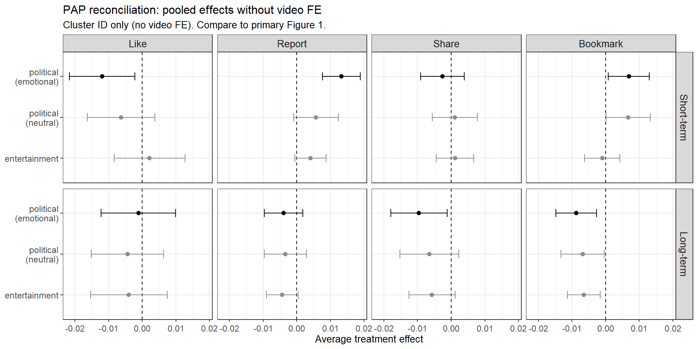
Pairwise outcome correlations on emotionally manipulative political videos, wave 9. Cells expanded to three rows (\(r_T\), \(r_C\), \(\Delta\)) with a rule after each outcome group.
oc_labs <- c("Like", "Share", "Bookmark", "Report", "Watch time", "Skip")
oc_vars <- c(
Like = "videoLikep1r",
Share = "videoSharep1r",
Bookmark = "videoBookmarkp1r",
Report = "videoCommentTickedp1r",
`Watch time` = "watch_percentage_",
Skip = "skipped_video_"
)
star_p <- function(p) {
if (!is.finite(p)) return("")
if (p < 0.01) return("***")
if (p < 0.05) return("**")
if (p < 0.10) return("*")
""
}
fmt_r <- function(x) {
if (!is.finite(x)) return("")
sprintf("%0.2f", x)
}
pair_cor <- function(x, y) {
ok <- is.finite(x) & is.finite(y)
n <- sum(ok)
if (n < 3) return(list(r = NA_real_, n = n))
list(r = suppressWarnings(cor(x[ok], y[ok])), n = n)
}
cluster_cor_diff_p <- function(yi, yj, mod, id) {
ok <- is.finite(yi) & is.finite(yj) & is.finite(mod) & !is.na(id)
if (sum(ok) < 8L) return(NA_real_)
mod_ok <- as.numeric(mod[ok])
if (length(unique(mod_ok)) < 2L) return(NA_real_)
yi_ok <- as.numeric(yi[ok])
yj_ok <- as.numeric(yj[ok])
s_i <- stats::sd(yi_ok)
s_j <- stats::sd(yj_ok)
if (!is.finite(s_i) || !is.finite(s_j) || s_i <= 0 || s_j <= 0) return(NA_real_)
d <- data.frame(
yi_z = as.numeric(scale(yi_ok)),
yj_z = as.numeric(scale(yj_ok)),
mod = mod_ok,
ID = as.character(id[ok]),
stringsAsFactors = FALSE
)
fit <- tryCatch(feols(yi_z ~ yj_z * mod, data = d, cluster = ~ID), error = function(e) NULL)
if (is.null(fit)) return(NA_real_)
td <- broom::tidy(fit)
hit <- td$term[grepl(":", td$term, fixed = TRUE)]
if (length(hit) != 1L) return(NA_real_)
as.numeric(td$p.value[td$term == hit])
}
oc_num <- function(x) {
if (inherits(x, "haven_labelled")) x <- haven::zap_labels(x)
as.numeric(x)
}
df_oc_tc <- datasets$wave_9 |>
filter(strategy_2 == strategies[1]) |>
transmute(
ID = as.character(ID),
mod_treat = as.integer(workshop_Treatment),
across(all_of(unname(oc_vars)), oc_num)
) |>
rename(!!!setNames(unname(oc_vars), oc_labs))
cells_tc <- {
dat_a <- df_oc_tc[df_oc_tc$mod_treat == 1, , drop = FALSE]
dat_b <- df_oc_tc[df_oc_tc$mod_treat == 0, , drop = FALSE]
out <- vector("list", length(oc_labs) * length(oc_labs))
k <- 0L
for (i in seq_along(oc_labs)) {
for (j in seq_along(oc_labs)) {
k <- k + 1L
rn <- oc_labs[i]
cn <- oc_labs[j]
if (identical(rn, cn)) {
out[[k]] <- tibble(row = rn, col = cn, r_a = NA_real_, r_b = NA_real_,
delta = NA_real_, p = NA_real_, blank = TRUE)
next
}
pa <- pair_cor(dat_a[[rn]], dat_a[[cn]])
pb <- pair_cor(dat_b[[rn]], dat_b[[cn]])
p <- cluster_cor_diff_p(df_oc_tc[[rn]], df_oc_tc[[cn]], df_oc_tc$mod_treat, df_oc_tc$ID)
out[[k]] <- tibble(
row = rn, col = cn, r_a = pa$r, r_b = pb$r, delta = pa$r - pb$r, p = p, blank = FALSE
)
}
}
bind_rows(out)
}star_tex <- function(p) {
s <- star_p(p)
if (!nzchar(s)) return("")
paste0("^{", s, "}")
}
val_tex <- function(x, p = NA, blank = FALSE) {
if (isTRUE(blank) || !is.finite(x)) return("")
paste0(fmt_r(x), star_tex(p))
}
align <- paste0("ll", paste(rep("c", length(oc_labs)), collapse = ""))
header <- paste(c("Outcome", "", oc_labs), collapse = " & ")
body <- character(0)
html_mat <- matrix("", nrow = 3 * length(oc_labs), ncol = 2 + length(oc_labs))
colnames(html_mat) <- c("Outcome", "Stat", oc_labs)
html_i <- 0L
for (i in seq_along(oc_labs)) {
rn <- oc_labs[i]
row_t <- row_c <- row_d <- character(length(oc_labs))
for (j in seq_along(oc_labs)) {
cell <- cells_tc |> filter(row == rn, col == oc_labs[j])
row_t[j] <- val_tex(cell$r_a, blank = cell$blank)
row_c[j] <- val_tex(cell$r_b, blank = cell$blank)
row_d[j] <- val_tex(cell$delta, cell$p, blank = cell$blank)
}
body <- c(
body,
paste(c(rn, "$r_{T}$", row_t), collapse = " & "),
paste(c("", "$r_{C}$", row_c), collapse = " & "),
paste0("\\rowcolor{ocrow} ", paste(c("", "$\\Delta$", row_d), collapse = " & "))
)
html_mat[html_i <- html_i + 1L, ] <- c(rn, "r_T", row_t)
html_mat[html_i <- html_i + 1L, ] <- c("", "r_C", row_c)
html_mat[html_i <- html_i + 1L, ] <- c("", "Delta", gsub("\\^\\{([^}]+)\\}", "*\\1", row_d, perl = TRUE))
}
note <- paste0(
"\\multicolumn{", 2 + length(oc_labs), "}{l}{\\scriptsize{",
"$^{***}p<0.01$; $^{**}p<0.05$; $^{*}p<0.10$ (clustered interaction: standardized $Y_i \\sim Y_j \\times$ group, cluster ID). Pairwise-complete $n$.",
"}}"
)
body_grouped <- character(0)
for (g in seq_along(oc_labs)) {
i0 <- (g - 1L) * 3L
body_grouped <- c(
body_grouped,
paste0(body[i0 + 1L], " \\\\"),
paste0(body[i0 + 2L], " \\\\"),
paste0(body[i0 + 3L], " \\\\"),
if (g < length(oc_labs)) "\\hline" else NULL
)
}
tex <- c(
"\\begin{table}",
"\\begin{center}",
"\\setlength{\\tabcolsep}{4pt}",
paste0("\\begin{tabular}{", align, "}"),
"\\hline",
paste0(header, " \\\\"),
"\\hline",
body_grouped,
"\\hline",
paste0(note, " \\\\"),
"\\end{tabular}",
paste0(
"\\caption{Pairwise outcome correlations (emotionally manipulative political videos; ",
"video--respondent rows, wave 9 only). ",
"Within each outcome, three rows report $r_{T}$, $r_{C}$, and $\\Delta=r_{T}-r_{C}$ ",
"with clustered-interaction stars ($*/**/***$) on $\\Delta$. Diagonal blank.}"
),
"\\label{tab:outcome_cors_treat_ctrl}",
"\\end{center}",
"\\end{table}"
)
writeLines(tex, file.path(tab_dir, "tab_s14_outcome_cors.tex"))
publish_tex("tab_s14_outcome_cors")
knitr::kable(
html_mat,
caption = "Outcome correlations — treatment vs control (wave 9). Groups of three rows: r_T, r_C, Delta.",
align = c("l", "l", rep("c", length(oc_labs))),
escape = FALSE,
row.names = FALSE
)| Outcome | Stat | Like | Share | Bookmark | Report | Watch time | Skip |
|---|---|---|---|---|---|---|---|
| Like | r_T | 0.18 | 0.07 | -0.01 | 0.26 | -0.21 | |
| r_C | 0.20 | 0.13 | 0.01 | 0.30 | -0.24 | ||
| Delta | -0.01 | -0.06**** | -0.02 | -0.04**** | 0.03**** | ||
| Share | r_T | 0.18 | 0.13 | 0.04 | 0.13 | -0.10 | |
| r_C | 0.20 | 0.19 | 0.06 | 0.15 | -0.12 | ||
| Delta | -0.01 | -0.06*** | -0.02 | -0.02*** | 0.02** | ||
| Bookmark | r_T | 0.07 | 0.13 | 0.08 | 0.11 | -0.09 | |
| r_C | 0.13 | 0.19 | 0.13 | 0.11 | -0.10 | ||
| Delta | -0.06** | -0.06 | -0.05 | -0.01 | 0.00 | ||
| Report | r_T | -0.01 | 0.04 | 0.08 | 0.12 | -0.11 | |
| r_C | 0.01 | 0.06 | 0.13 | 0.09 | -0.07 | ||
| Delta | -0.02 | -0.02 | -0.05 | 0.03**** | -0.04**** | ||
| Watch time | r_T | 0.26 | 0.13 | 0.11 | 0.12 | -0.84 | |
| r_C | 0.30 | 0.15 | 0.11 | 0.09 | -0.83 | ||
| Delta | -0.04 | -0.02 | -0.01 | 0.03 | -0.01 | ||
| Skip | r_T | -0.21 | -0.10 | -0.09 | -0.11 | -0.84 | |
| r_C | -0.24 | -0.12 | -0.10 | -0.07 | -0.83 | ||
| Delta | 0.03 | 0.02 | 0.00 | -0.04 | -0.01*** |